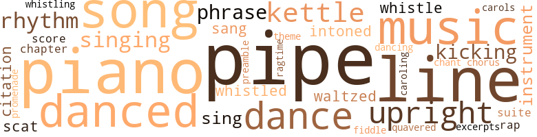
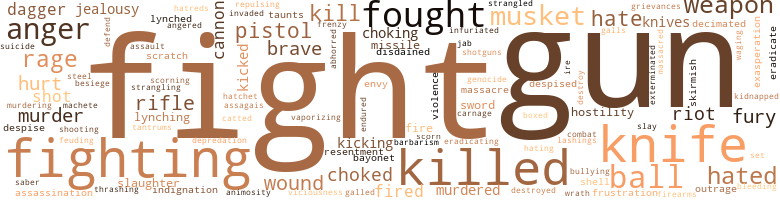
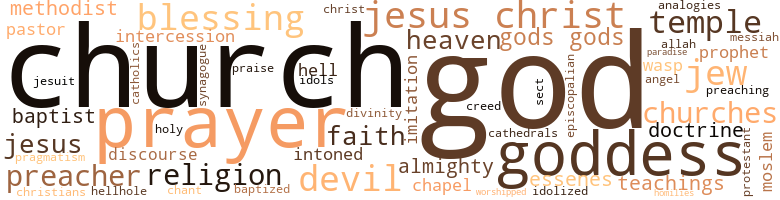

Those the Sun Has Loved, by Jourdain, Rose (1978)
131 music-related terms matched in this text.
Most frequent terms in this topic: pipe (14); piano (10); music (8); line (8); danced (7)
carol.n.01
Definition: joyful religious song celebrating the birth of Christ
| word | sentence |
|---|---|
| carols | And when they sang the carols . . . " his homesickness would become unbearable . |
caroling.n.01
Definition: singing joyful religious songs (especially at Christmas)
| word | sentence |
|---|---|
| caroling | And Melinda . . . " Melinda , a sprig of mistletoe in her hair ; Melinda caroling in her hooded cape . |
chant.n.01
Definition: a repetitive song in which as many syllables as necessary are assigned to a single tone
| word | sentence |
|---|---|
| chant | Jacques heard the chant from the Beracheve Shalom , synagogue of the Sephardic Jews , and the languages of the street : Dutch , English , French , Portuguese , Hebrew , and Spanish , as well as the indigenous tongue , taki-taki , invented by the bush Negroes . |
chapter.n.01
Definition: a subdivision of a written work; usually numbered and titled
| word | sentence |
|---|---|
| chapter | He had been well into the eighth chapter of The Gallant Years , his first published novel , when he married her . |
chorus.n.01
Definition: any utterance produced simultaneously by a group
| word | sentence |
|---|---|
| chorus | A bell tingled as Moses opened the low gate , touching off a wild chorus of " Papa 's home , " and four running children threatened to knock him from his feet . |
dance.n.01
Definition: an artistic form of nonverbal communication
| word | sentence |
|---|---|
| dance | No force of will could calm his heart 's wild dance beneath his ragged jacket . |
| dance | As the warriors made ready , Kheni , the witch doctor , had prepared for the Krumanti , the ritual fire dance , by building the obia house with twigs . |
| dances | They hunted and fished and danced their holy dances and worshipped the Great Spirit who provided them with life . |
| dance | So the Wampanoags dance the spirit dance and wait on their gods . " |
dance.v.03
Definition: skip, leap, or move up and down or sideways
| word | sentence |
|---|---|
| danced | Melinda had danced in glee as they received invitations to the Appomattox Club , the elegant Assembly Ball , the glittering Forty Club , the stupendous parties of Jesse Binga in the ballroom atop his bank . |
| dancing | Crazy Horse dancing his pony across the Big Horn and Sally Jones lifting clothes from the washtubs and singing " Nearer My God to Thee . " |
| danced | His dark eyes danced above the hollows in his face . |
| danced | Jason 's eyes danced as he ran from the office . |
| dance | There , watching the sun come over the rooftops of Paris to dance a moment on the Seine , she felt a serenity she had never known . |
| danced | His eyes blazed at the girl whose own now danced with joy . |
| danced | It 's coming , " danced back through the falling snow . |
| danced | Delight danced in Isabella 's eyes . |
| dance | " Nor will you suddenly have rhythm , and be able to dance and sing . |
| danced | They hunted and fished and danced their holy dances and worshipped the Great Spirit who provided them with life . |
| dance | So the Wampanoags dance the spirit dance and wait on their gods . " |
excerpt.n.01
Definition: a passage selected from a larger work
| word | sentence |
|---|---|
| Excerpts | Excerpts appeared on the front page of The Dispatch : In this hour of darkness and danger , we appeal to you , fellow citizens , to bear in mind the following facts : Virginia invites Massachusetts and other states to a convention with a view , as alleged , of settling the present national difficulties . . . . " Oh , men of Massachusetts , tell us not that there are two kinds of rights - rights of the rich , which you respect because you must ; rights of the poor on which you trample because you dare . . . . " Speak out , Massachusetts ! |
kettle.n.04
Definition: a large hemispherical brass or copper percussion instrument with a drumhead that can be tuned by adjusting the tension on it
| word | sentence |
|---|---|
| kettle | The maid returned with a steaming kettle and a knife , averting her eyes from Rebecca 's nakedness . |
| kettle | She heard the whistle of the kettle and turned to pull it from the fire . |
| kettle | Not , Alanya thought , dipping water from the barrel and pouring it into the kettle , that tailoring had been a bad choice . |
| kettle | Alanya 's lips tightened as she placed the kettle on the swinging crane over the fire . |
| kettles | " Wamsutta , son of Massasoit , chief of the Wampanoags , gave rights to this land for thirty yards of cloth , eight moose skins , fifteen axes , hoes and pairs of breeches , eight blankets , a couple of kettles , a clock , eight pairs of stockings and shoes , and one iron pot . |
kick.v.04
Definition: kick a leg up
| word | sentence |
|---|---|
| kicking | Then he heard him moan , and , damning him , tightened his hold , kicking ever more feebly in the biting blackness . |
| kicking | Yes , it was the baby kicking . " |
| kicking | His eyes shone in the holes of his hood as he walked with a limp to the screaming , kicking boy . |
| kicking | He floundered on Clay 's shoulders from the viciousness of his friend 's kicking . |
music.n.01
Definition: an artistic form of auditory communication incorporating instrumental or vocal tones in a structured and continuous manner
| word | sentence |
|---|---|
| music | The sound of music was everywhere . |
| music | When he was twelve , his mother 's sister , who taught music in the city , impressed by his yearning for scholarship , had won his parents to her conviction that the city schools were the place for him . |
| music | Diatu 's music was sweeping the folk circles and giving new impetus to American jazz . |
| music | But from the start Jacques had been most fascinated by the activity in the Van Hoven shipyard , with the barges , which often carried musicians , playing gay music as they passed on the river , and with the brigs and barques bearing flags of lands beyond the sea . |
| music | She had no knowledge of music and gave herself , almost with relief , to housekeeping . |
| music | Ofttimes the darlings of white fathers ( who dared not admit this progeny to their own society ) , many were educated by tutors , or abroad , and played music and entertained in quarters as elegant as any seen by a Bourbon bride . |
| music | But the music was too gay , the time too sweet , and life too beautiful in the halls of marble to heed the lightning flashing on the plains . |
| music | But it was , Clay thought , the music from the upright piano that framed the scene , that captured it , that gave it truth , urgency , and an immortality of its own . |
musical_instrument.n.01
Definition: any of various devices or contrivances that can be used to produce musical tones or sounds
| word | sentence |
|---|---|
| instruments | " All right , get out , " Jacques said , starting to the bathroom with her instruments . |
| instrument | Clay frowned as he read down the page : the Influx Control Act ; the dusk-to-dawn curfews ; the Group Areas Act ; the Job Reservation Act ; the Riotous Assemblies Act - under which even prayer services and silent protests had been banned ; the Unlawful Organization Act - which had banned the African National Congress and the African Congress , the black resistance movements ; the Affected Organizations Act , which was structured to prevent help from overseas ; the Departure from Union Regulations Act - an instrument of indimidation which also had the power to refuse or to withdraw passports ; the Immorality Act , which made sexual intercourse between whites and blacks punishable by a seven-year prison sentence . |
| instruments | The silver mirrors and brushes on her dresser had been replaced by steel canisters containing sterile instruments . |
phrase.n.02
Definition: a short musical passage
| word | sentence |
|---|---|
| phrase | For a moment they spoke softly , their voices almost musical , with the soft clicking sound of the Xhosa people coming at the end of each phrase . |
| phrases | Anton Key reveled in the high-sounding phrases of the revolutionary theorists , repeating them with a passion that , Jacques was certain , even their originators rarely felt . |
| phrases | In a voice low as with a fellow conspirator , Jason spoke the cogent words , French phrases , Greek analogies . |
| phrase | Clay , understanding she would not appreciate questioning about her employer 's strange habits , agreed with Mrs. Lovey that Parker was indeed - a phrase he 'd recently learned - " a real good guy . " |
piano.n.01
Definition: a keyboard instrument that is played by depressing keys that cause hammers to strike tuned strings and produce sounds
| word | sentence |
|---|---|
| piano | " They can play a piano professionally . |
| piano | " Can you imagine her arriving here , in the jungle , with her trunks of underskirts and that piano ? |
| piano | That great four-sided piano that sits in the drawing room ? " |
| piano | She stayed on the plantation , teaching her son to read French and English , to play the piano , teaching him to hate this life . |
| piano | His massive head nodded in slow considered admiration of the Swiss grandfather clocks , the tables and cabinets from England , the French chairs , the Persian rugs , the four-sided engraved rosewood piano . |
| piano | Alexander spent his free hours with her , or reading , or playing the piano , seldom playing with boys liis age . |
| piano | But even as children , Jacqueline and Alexander had differed greatly - Jacqueline obsessed with her father 's stories of adventure and great fortune , and Alexander , Noni smiled , her Chinue she had called him , her God 's own blessing , thinking only of his books , and his piano . |
| piano | Resisting school , abandoning the piano , ignoring the entreaties of his family , the invitations of his few friends , living behind the closed door of his room . |
| piano | Exhausted from a long trip , he had snapped , " My God , Thomasina , you have a library full of books and a piano in the parlor . |
| piano | But it was , Clay thought , the music from the upright piano that framed the scene , that captured it , that gave it truth , urgency , and an immortality of its own . |
pipe.n.04
Definition: a tubular wind instrument
| word | sentence |
|---|---|
| pipe | Clay reached for his pipe to hide his amusement . |
| pipe | Clay clicked his pipe against his teeth . |
| pipe | Ezekiel peered over his long-stemmed pipe at Jacques . |
| pipe | The old man packed his tobacco firmly , then leaned back in his seat and lit his pipe . |
| pipe | Ezekiel puffed on his pipe with satisfaction , nodding his approval of the tobacco mixture . |
| pipe | Kuykendal lit his pipe . |
| pipe | Kuykendal puffed on his pipe and nodded . |
| pipe | He relit his pipe , puffing until the tobacco burned well . |
| pipe | In the wind and water his feeling grew for the whiskered man on the quarterdeck , clutching the dripping pipe between his teeth , who knew their adversary and met its strength with cunning . |
| pipe | Resting his pipe on the windlass , Kuykendal searched his pocket and excavated a jackknife and a whale tooth covered with intricate carvings . |
| pipe | Jacques could taste the salt spray and he heard the last low shrill of the boatswain 's pipe . |
| pipe | For the fiftieth time in as many weeks , Kuykendal now pondered this , moving from event to event , his pipe clenched between his teeth while his knife dug viciously at the whalebone in his hand . |
| pipe | Turning , Jacques saw the first mate , Nils Kuykendal , coming up behind him , his pipe , as always , poking from the middle of his blond-whiskered face . |
| pipe | The aroma from his pipe mellowed her , and his voice was soft and gentle with the verse . |
preamble.n.01
Definition: a preliminary introduction to a statute or constitution (usually explaining its purpose)
| word | sentence |
|---|---|
| preamble | It could be a preamble to further violence . |
promenade.n.01
Definition: a formal ball held for a school class toward the end of the academic year
| word | sentence |
|---|---|
| promenade | It had been waiting two thousand years for her arrival - its broad boulevards for her promenade , its cathedrals for her meditation , its flower shops for her delight , and its famed restaurants , gathering places for the princely and the prosperous to admire her beauty . |
quotation.n.02
Definition: a passage or expression that is quoted or cited
| word | sentence |
|---|---|
| citations | Clay gripped the steering wheel of the Stutz , remembering his oldest son , Paul . . . " The 370th U. S. Infantry , made up of Negroes from private to colonel , had received more combat citations than any other American regiment in France . |
| citation | The World Health Organization invited Clay to Geneva to open its Emergency World Food Convention and , from Paris , a citation " In Behalf of All Humanity . " |
ragtime.n.01
Definition: music with a syncopated melody (usually for the piano)
| word | sentence |
|---|---|
| ragtime | White folks called it ragtime . |
rap.n.05
Definition: genre of African-American music of the 1980s and 1990s in which rhyming lyrics are chanted to a musical accompaniment; several forms of rap have emerged
| word | sentence |
|---|---|
| Rap | A very special nigger maybe , a very lucky nigger , without a doubt , but just a frustrated , dreamless nigger like himself or Christy or Harold ... or Jack or Bubba or Deduc or Jabo or Rap or Huey or Angela . . . " Dave 's mind had boggled For the first time a profound sense of love for Clay engulfed him , a sense of love that could only come from true understanding , from a fellow seeker , from another nigger , from an equal . |
rhythm.n.04
Definition: the arrangement of spoken words alternating stressed and unstressed elements
| word | sentence |
|---|---|
| rhythms | And though Jacques sometimes doubted as the sacred drums summoned the gods - the complex rhythms of the apinti calling the ancestor spirits and the almighty sky god , Nion , while the steady beat of the agida commanded the snake spirits - he had felt the certain conviction of religion as the spirits that ruled the waterways were called for permission to enter their domain . |
| rhythm | Kuykendal fell back , his head striking the oar , his blood spurting out in the rhythm of his heart . |
| rhythm | " Nor will you suddenly have rhythm , and be able to dance and sing . |
| rhythm | It was the strange combination of rhythm and tone that Clay had heard standing in the street outside the Ark and the other bawdy houses of New Bedford ; close , insistent , knowing , demanding . |
| rhythm | The cash register had a rhythm of its own . |
scat.n.01
Definition: singing jazz; the singer substitutes nonsense syllables for the words of the song and tries to sound like a musical instrument
| word | sentence |
|---|---|
| scat | Jacques turned and faced his companion in the bouncing scat . " |
| scat | The last rays of the sun glinted through the smoky hearing room as Jason found his scat . |
score.n.02
Definition: a written form of a musical composition; parts for different instruments appear on separate staves on large pages
| word | sentence |
|---|---|
| score | By the score , doctors rushed to Chicago , to Provident , to watch Williams 's technique . |
sing.v.02
Definition: produce tones with the voice
| word | sentence |
|---|---|
| sang | The stillness sang with their footsteps until the shadows deepened . |
| sing | " Let 's sing , " she said quickly to the sweet-faced girl who had led the last song . |
| sing | He would not speak another speech , sing another song , pray another prayer . |
| singing | It was the clay of crossing over Jordan , of singing the Lord 's song in a strange land . |
| sing | " Nor will you suddenly have rhythm , and be able to dance and sing . |
| sang | And when they sang the carols . . . " his homesickness would become unbearable . |
singing.n.01
Definition: the act of singing vocal music
| word | sentence |
|---|---|
| singing | Crazy Horse dancing his pony across the Big Horn and Sally Jones lifting clothes from the washtubs and singing " Nearer My God to Thee . " |
| singing | The singing stopped . |
| singing | Then the drums and singing began . |
| singing | It was a time out of time , with all unjoyous things forbidden , with laughter made from little tilings , when the possible assumes the guise of promise and singing comes naturally to the heart . |
song.n.01
Definition: a short musical composition with words
| word | sentence |
|---|---|
| song | In the center of the stage Roland Hayes stood in the floodlights , his hands clasped before his slender body , as his song , born in pain , born in wisdom , rose in perfection from his dusky lips : " Little boy , how old are you ? |
| songs | Gospel songs had new words : " Up on the mountain , our Clay spoke , Outta his mouth came fire and smoke . |
| song | A hummingbird passed above them , then alighted , their neighbor on a nearby lilypad , filling the air with his song . |
| song | " Let 's sing , " she said quickly to the sweet-faced girl who had led the last song . |
| song | After this song , it would be done . |
| song | He would not speak another speech , sing another song , pray another prayer . |
| song | They heard the marching , the band playing John Brown 's song . |
| song | It was the clay of crossing over Jordan , of singing the Lord 's song in a strange land . |
| songs | Together , they would swim to a giant lily pad and climb upon it , to enjoy the gentle undulations of the stream , to watch the giant butterflies , to listen to the sweetness of the hummingbird 's songs . |
suite.n.01
Definition: a musical composition of several movements only loosely connected
| word | sentence |
|---|---|
| suite | The press was in wait again outside his suite . |
theme.n.03
Definition: (music) melodic subject of a musical composition
| word | sentence |
|---|---|
| theme | A theme written for a lagging student could earn a week of devoted service , and Aunt Jacqueline 's gifts supplied her other needs . |
tone.v.01
Definition: utter monotonously and repetitively and rhythmically
| word | sentence |
|---|---|
| intoned | Yes , they were all the right words , rightly intoned . |
| intoned | Her voice intoned the practiced submission of new womanhood . |
tune.n.01
Definition: a succession of notes forming a distinctive sequence
| word | sentence |
|---|---|
| line | And with each new line that creased his forehead , with each new gray hair at his temple , damn it , he was getting better . |
| line | Keith Kuykendal 's Tahoe-tanned face scowled as his telephone at the Star rang and the indicator above his private line lit up . |
| line | It was , the author said , the simplest way to accomplish two much needed objectives : to assure access to raw materials and to hold the population in line . |
| line | Ella ran the house , needing not to lift a finger , and only rarely her voice , to keep cook , maids , gardener , and her beloved Ben in line . |
| line | Carleton 's mother stood on the veranda with her receiving line of slaves . |
| line | He may not be dressed up line , he may be barefoot , but he ai n't cold . |
| line | . . . His terrible swift sword . . . " Then line after line of taut black troops marched by . " |
| lines | Colonel Shaw , dressed in a close-fitting jacket and light blue trousers , paced his lines and looked again at the heavy fog moving in from the sea . |
| line | " Then , " Moses said gruffly , " when the whale is fast , keep yer eye on that land-made line . " |
| lines | Jacques saw exhaustion in her moonlit face , small lines that he had never seen before . |
upright.n.02
Definition: a piano with a vertical sounding board
| word | sentence |
|---|---|
| upright | The stanchions , upright supports from the keelson , were fitted into place . |
| upright | And , with much more help from her than was needed , Jacques sat upright in bed . |
| upright | Isabella sat upright . |
| upright | She sat upright , then saw his eyes and averted her own . |
| upright | Isabella jerked upright . |
| upright | The lid popped open , and Isaiah Stone , no longer bound , sat upright in death . |
violin.n.01
Definition: bowed stringed instrument that is the highest member of the violin family; this instrument has four strings and a hollow body and an unfretted fingerboard and is played with a bow
| word | sentence |
|---|---|
| fiddle | " And you fit as a fiddle . " |
waltz.v.01
Definition: dance a waltz
| word | sentence |
|---|---|
| waltzed | One late morning , after they had waltzed all night in each other 's arms , the senior Waverley was waiting when Isabella appeared at her bedroom door . |
| waltzed | Smiling , Isabella waltzed in her father-in-law 's arms . |
warble.v.01
Definition: sing or play with trills, alternating with the half note above or below
| word | sentence |
|---|---|
| quavered | Jacqueline 's voice quavered with indignation . " |
whistle.v.01
Definition: make whistling sounds
| word | sentence |
|---|---|
| whistle | Woodson let out a slow whistle . |
| whistling | Major demonstrations are being organized in Chicago , L.A. , New York , and D.C. to go off simultaneously with the one in the Coliseum , if , of course , our ponies do n't bolt the gate " - Clay heard the whistling sigh escaping Jeff 's lips - " which I do n't need to tell you would look pretty bad after all this talk , not only for you but also for the rest of the black congressmen . |
| whistled | Dawson 's whip whistled in the air . |
| whistle | She heard the whistle of the kettle and turned to pull it from the fire . |
| whistled | Her lovely oval-shaped eyes sparkled as a young black soldier whistled at her saucy , unconcerned steps . |
495 violence-related terms matched in this text.
Most frequent terms in this topic: fighting (27); fight (27); knife (26); killed (25); fought (24)
abhor.v.01
Definition: find repugnant
| word | sentence |
|---|---|
| abhorred | She worked in no war effort , made no uniforms , rolled no bandages , refused to donate her silver for bullets or to buy Confederate bonds , and in moments of emotion she had confessed to friends that she abhorred slavery and did not believe the South would win . |
abrasion.n.01
Definition: an abraded area where the skin is torn or worn off
| word | sentence |
|---|---|
| scratch | You 'd be starting from scratch . |
| scratch | Well , maybe not quite scratch - your father and uncles are influential , and your appointment to the Human Relations Council could help . |
aggravation.n.01
Definition: an exasperated feeling of annoyance
| word | sentence |
|---|---|
| exasperation | " Pepper " - he kept his voice low , controlling exasperation - " find out who you have to call to get those partitions today . |
| exasperation | Jason exploded , then bowed in mock exasperation . " |
anger.n.01
Definition: a strong emotion; a feeling that is oriented toward some real or supposed grievance
| word | sentence |
|---|---|
| anger | And that first night on the Vineyard with Melinda near , he had seen doubt , even anger , in his uncle 's eyes . |
| anger | Sykes leapt to his feet , his face blotched with anger . |
| anger | Jacques felt the quick surge of futile anger . |
| anger | Controlling his flaring anger , he leapt from the carriage . |
| anger | She heard anger in his voice and touched his arm . |
| anger | Once again she wore the Clavier mask - cold , untouchable , no anger - no time for that . |
| Anger | Anger tensed the man next to Alexander . |
| anger | Those nights when he pumped into her the seeds of love , of hope - smothering her in his need , his desperation , his anger , his frustration . |
| anger | But , she thought , touching the hem of her favorite dress , downstairs she would have to face the aloof disgust of her father and the resigned anger of her mother . |
| Anger | Anger fought with tears for Isabella . |
| anger | Jason listened to his aunt with growing anger ; his wide nostrils flaring , his hazel eyes narrowing in his bronze high-cheekboned face . |
| anger | He knew too well the tantrums to which anger could persuade his father , and he would not give that ogre the pleasure of performing before his bride . |
| anger | His thin lips were compressed - in anger ? |
| anger | Her heart pounded in anger and in fear . |
| anger | " As you know , I do n't believe that anyone has the right to own , to give away human beings . . . " " Then I 'll make the choice , " Carleton said quickly , seeing anger slide into his father 's eyes . |
| anger | He could not have been there when . . . " " My God " - anger spewed Carleton 's words at her - " is that all you ever think of - your goddamn looks ? " |
| anger | Isabella snatched the glass , trying to restrain her new anger - with Ella . |
| ire | Jacques had learned to understand the signals that caused alternately his mother 's depressions or her ire . |
| anger | Perplexity was changing to anger when Clay heard the voice inside the hall - low , tense , tinged with a patois Clay had heard from time to time on the wharves of New Bedford . |
anger.v.02
Definition: become angry
| word | sentence |
|---|---|
| angered | Ella , angered by her scrutiny , snapped , " I is . |
animosity.n.01
Definition: a feeling of ill will arousing active hostility
| word | sentence |
|---|---|
| animosity | Well , he 'd not give that nigger the pleasure of asking for haste so he could answer , " Mista Carleton , Masta Doolane say . . . " Carleton felt no special animosity toward Ike , no more than to the other four or five niggers around the place that bore his father 's likeness . |
assegai.n.01
Definition: the slender spear of the Bantu-speaking people of Africa
| word | sentence |
|---|---|
| assagais | Clay had never met Cetewayo Wandiza , who had been named for the heroic Zulu-Kaffir ( or , as they called themselves , Amazosas ) warrior who had led the Zulus armed with assagais against the machine-gun-armed army of England in 1879 . |
bayonet.n.01
Definition: a knife that can be fixed to the end of a rifle and used as a weapon
| word | sentence |
|---|---|
| bayonets | Quietly , reminding his men that the world was watching , he gave the order to fix bayonets . |
| bayonet | " Easy , Alex , " Jason grunted , using his bayonet to lift the limb . |
besiege.v.01
Definition: surround so as to force to give up
| word | sentence |
|---|---|
| besiege | George Washington , a planter from Virginia , was named commander of the army being formed to besiege the British in Boston . |
blast.v.03
Definition: use explosives on
| word | sentence |
|---|---|
| shell | By the time that boy Lincoln Grant had come , with the letter from his father asking for a donation for that school - Christiana University it had become - he had been able to shell out fifty thou . |
| shell | But she was so young , and that shell fragment , that damn shell fragment in his head . . . " Cat had guessed his dilemma . |
bleeding.n.01
Definition: the flow of blood from a ruptured blood vessel
| word | sentence |
|---|---|
| bleeding | Cat stuffed the cloth beneath his shirt to stanch the bleeding from his shoulder . |
box.v.03
Definition: engage in a boxing match
| word | sentence |
|---|---|
| boxed | Everything not given to a good cause had been carefully boxed and set back under the eaves : furniture , clothing , the ships logs and mementos of Papa Jacques , including a now famous " Temple iron , " the toggle harpoon invented by their onetime neighbor , a Negro , Lewis Temple . |
brush.n.06
Definition: a minor short-term fight
| word | sentence |
|---|---|
| skirmish | " A colored seaman I knew , Crispus Attucks by name , was the first man killed in a skirmish with the British two years ago . |
| skirmish | They had been on the march for two days , hardly eating or sleeping since fighting a bloody skirmish with the Confederates on James Island . |
brutality.n.02
Definition: a brutal barbarous savage act
| word | sentence |
|---|---|
| barbarism | He was a great man , her Jason , and though they had , with ruthless barbarism , stripped naked the fibers of his being , they had not , till Alex , touched his soul . |
bullying.n.01
Definition: the act of intimidating a weaker person to make them do something
| word | sentence |
|---|---|
| bullying | Boasting , bragging bullying , like all oppressed and powerless people , with each other about some meaningless deed , some beetle smashed , some small nit or leaf scavenged from that terrifying world . |
cannon.n.04
Definition: heavy automatic gun fired from an airplane
| word | sentence |
|---|---|
| cannon | He looked to see that he had her attention , then drew a deep breath and read : " When I reflect that God is just and millions of my wretched brethren would meet death with glory , yea , more , would plunge into the fiery mouths of cannon and be tom into particles as minute as the atoms which compose the elements of the earth in preference to a mean submission to the leash of tyrants , I am with streaming eyes compelled to shrink back into nothingness before my Maker , and exclaim again , Thy will be done , O Lord God Almighty . . . " Thomasina felt tingles on her arms . |
| cannon | The Maroon canoes came on amidship , presenting a slim target for the Dutch cannon . |
| cannon | The chimes of St. Michael 's Church sounded half past the hour against the booming of the cannon . |
| cannon | Then he saw Clay on the ramparts , silhouetted in the flash of cannon . |
| cannon | All night the cannon had been booming from Fort Wagner . |
cat.v.01
Definition: beat with a cat-o'-nine-tails
| word | sentence |
|---|---|
| catted | The anchor weighed and catted . |
character_assassination.n.01
Definition: an attack intended to ruin someone's reputation
| word | sentence |
|---|---|
| assassination | The assassination of Steve Biko and the subsequent failure of the police to bring his murderer to justice became the starting gun of a new hunting season on blacks and those whites who speak against apartheid . |
| assassination | Rumors of plots for his assassination swept the capital . |
contemn.v.01
Definition: look down on with disdain
| word | sentence |
|---|---|
| scorning | Much too civilized not to be liberal , scorning the crudity of prejudice , they could , then , afford the luxury of mocking the very myths that so many , years later , would perpetuate their power ; myths that kept both blacks and whites in semi-slavery . |
| despise | Bleating Christians with their false mutterings despise ye because ye have the lamb 's - wool hair of the Lord they swear to love . |
| disdained | The sailor held the oil lamp high , pointing out the man who had disdained his dinner . |
| scorn | Talbert 's short laugh was harsh with scorn . |
| despised | Theirs had been a different task , that of molding the alien and the despised , those of many tribes and many traditions , Bantu and Songhay , Fula and Fanli , Nubian and Dahomean , into one people . |
| despised | Part of him despised this tortuous bout with superstition , but another part , the part most fundamental to his nature , upheld fear as reason . |
| disdained | He respected intelligence and disdained frivolity . |
| despises | " Even the behemoth despises our transgression , " said Watson , an old Nantucketer . |
craze.n.02
Definition: state of violent mental agitation
| word | sentence |
|---|---|
| frenzy | Jason had returned from France after learning of John Brown 's raid at Harpers Ferry and had raised the fervor of abolition in the household from Papa 's fanaticism to sheer frenzy . |
dagger.n.01
Definition: a short knife with a pointed blade used for piercing or stabbing
| word | sentence |
|---|---|
| daggers | But there was so much that was new : people from all over the world , even a troupe of traveling actors from New York , who played with paper crowns and daggers before canvas palaces and painted forests . |
| dagger | " Waste not your worries on me , but on those my dagger finds . " |
| dagger | Then , in the midst of a raid on a Portuguese pirate ship , Afu was knocked to the deck , the dagger of a swarthy Cape Verdean seaman at his throat . |
| dagger | Nsai had drawn his dagger , testing the keenness of its blade with his fingers . |
| dagger | With his dagger , he had fashioned a cross and carved three names on it . |
depredation.n.01
Definition: an act of plundering and pillaging and marauding
| word | sentence |
|---|---|
| depredation | Then the Baptists came along , declaring slavery ' a violent depredation of the rights of nature and inconsistent with a republican government . ' |
destroy.v.04
Definition: put (an animal) to death
| word | sentence |
|---|---|
| destroyed | The white men came and destroyed the cattle . |
| destroy | That government has put this state on the road to recovery , and you and I both know it was in a position to destroy it completely . " |
eliminate.v.03
Definition: kill in large numbers
| word | sentence |
|---|---|
| decimated | More than one Indian tribe had been decimated or wiped out entirely by contaminated blankets sold deliberately to them . |
| eradicates | It eradicates creativity . |
| decimated | Their lines were decimated now , but they were still moving up , through the grape and canister and bodies of their dead . |
| eradicate | " He 's moving with almost unrestrained power to eradicate the legacy of Lincoln , to blot out the single momentous achievement of the previous administration . " |
| eradicating | Jason clutched the seat before him as his vision fogged , eradicating behind a dense gray wall the faces on his right . |
engage.v.07
Definition: carry on (wars, battles, or campaigns)
| word | sentence |
|---|---|
| waging | Jonathan Gibbs is waging a heroic fight as Superintendent of Schools in Florida . . . . " There 's Hood in North Carolina . |
envy.n.01
Definition: a feeling of grudging admiration and desire to have something that is possessed by another
| word | sentence |
|---|---|
| envy | Gradually , admiration replaced envy . |
| envy | His face glowed as he saw envy in his companions ' eyes . |
exterminate.v.01
Definition: kill en masse; kill on a large scale; kill many
| word | sentence |
|---|---|
| exterminated | What the hell do you expect when a nation has been all but exterminated ? |
ferociousness.n.01
Definition: the trait of extreme cruelty
| word | sentence |
|---|---|
| viciousness | He floundered on Clay 's shoulders from the viciousness of his friend 's kicking . |
feud.v.01
Definition: carry out a feud
| word | sentence |
|---|---|
| feuding | And no part of this nation can survive if we become like Europe , a dozen different feuding sections . |
fight.n.02
Definition: the act of fighting; any contest or struggle
| word | sentence |
|---|---|
| combat | Clay gripped the steering wheel of the Stutz , remembering his oldest son , Paul . . . " The 370th U. S. Infantry , made up of Negroes from private to colonel , had received more combat citations than any other American regiment in France . |
| fighting | They had to keep on fighting . |
| Fighting | Fighting the panic now surging in his gut , Jacques breathed deeply to control his voice . |
fight.n.05
Definition: a boxing or wrestling match
| word | sentence |
|---|---|
| fight | A man , injured in a street fight with a knife wound near his heart , was taken to Provident Hospital , which had opened two years before , the only interracial hospital in America . |
| fight | You 've got a hell of a fight on your hands just to blast that education bill out of committee . |
| fight | The long , bitter fight for minority jobs during the depression that had gripped the nation during the early eighties was over . |
| fight | " And you may be in for a hell of a fight to get back to Congress . " |
| fight | More than once the doctor had been called for Clay after a fist fight in her name . |
| fights | " Until they at least pay us as equals , the 54th Massachusetts fights without pay . " |
| fight | Jonathan Gibbs is waging a heroic fight as Superintendent of Schools in Florida . . . . " There 's Hood in North Carolina . |
| fight | " He got himself killed in a knife fight in New York . " |
fight.v.02
Definition: fight against or resist strongly
| word | sentence |
|---|---|
| fought | Thank you , suh , for breakin ' his back because he fought to make the laws you made for real . |
| fighting | But despite Booker T. Washington 's " Atlanta Compromise , " Jack Johnson was fighting , Mat Henson had helped lead Peary to the North Pole , W. C. Handy had written the " Memphis Blues , " and Carter G. Woodson had formed " The Association for the Study of Negro Life and History . " |
| fighting | Despite the stupendous odds , implacable foes , lynchings and burnings , despite rigid segregation in every area of endeavor , the Negro was fighting his way forward . |
| fought | It fought for one hundred and ninety-one days under fire . |
| fought | The whites were afraid that blacks who had fought to keep the world safe for democracy might want to try a little for themselves at home . |
| fought | And while their women prayed and cheered , black men had fought back . |
| fighting | The churches , the Urban League , the NAACP , had done heroic work , holding the Negro community together , keeping the children and the elderly fed , fighting for jobs , for a chance to enjoy the democracy so many dark young men had died to save . |
| fought | The long war fought . |
| Fight | Fight them and we wo n't have a thing . |
| fighting | Look , stick with fighting for that . . . . " " Education , health care , housing , and South Africa have got to be our priorities , Chief , " a second voice ticked somberly in the large gray room . |
| fought | You fought to strip away the depletion allowance , to extend oil price control until 1984 . |
| Fought | Fought with the Indians in the war . |
| fighting | And you want to keep fighting them ? |
| fighting | " Not fighting them , Dave , " Clay said softly . |
| fighting | " I 'm fighting the laws that allow big business to get bigger and at the same time make it increasingly impossible for the little man to have anything - his own business , even his own home . |
| fighting | " Then " - Jacques 's eyes met Woodson 's - " why are you not fighting ? " |
| fighting | " The Indians are fighting it . |
| fighting | " Hell , yes , they 're fighting . |
| fight | They ought to fight . |
| fighting | Stop fighting those lonely , futile battles in the burrows . |
| fought | Who sometimes fought too hard . |
| defend | Mildred Moore from Michigan joined their staff as researcher and statistician and assembled a two-page handout of facts about Clay 's opponent - the text of which appeared also on the front page of the Gazette - which no politician hoping for a black vote could defend ! |
| fought | " He fought always for freedom for our people , " and the boy touched the exquisite workmanship around his mother 's neck - " he gave you this . " |
| fighting | In fact , their whole new scheme for an independent Soweto is designed to isolate and dampen the soaring revolutionary mood of our people who are fighting for the total liberation of South Africa . |
| fighting | Since the formation in 1912 of the African National Congress - the oldest liberation movement on the African continent - we have been fighting back . |
| fight | " African women organized to fight the pass system . |
| fought | And in Brazil and Surinam Maroons had fought back until the whites had been forced to sue for peace . |
| fight | " Anton , if and when war comes , I will fight for the colonies . |
| fought | Later in May , the first naval battle of the Revolution was fought in Buzzards Bay . |
| fought | " It was a stupid mistake to exclude Negroes , especially since they have fought with valor from the very beginning of the conflict . " |
| fight | " Even now Lord John Dun-more , the British governor of Virginia , is recruiting slaves to fight against the colonists . |
| fighting | I 've heard from a most reliable source that some slaves of both Washington and Jefferson have run off and are fighting with the enemy . " |
| fighting | " Remember , " he said , " we are a fighting people . |
| fighting | It 'll take too long , " Jacques replied , fighting his own panic . |
| fighting | He sailed up and down the coast and back and forth to France , bringing supplies , dodging the British when he could , turning and fighting only when necessary . |
| fought | In Boston , blacks and whites had fought pitched battles for bread and butter . |
| fought | A plan not based on open war , but on the work of those who fought inside ; the mind warriors , the guerrilla fighters . |
| fighting | My father won his freedom fighting in the Revolution . " |
| fighting | And I 'll spend my life , my whole life , fighting slavery . |
| fight | I 'll fight you . |
| fight | I 'll fight you till I die ! |
| fought | Alexander was wounded in the battle , fought two weeks after the peace treaty had been signed . |
| fighting | He returned to New Bedford on crutches and even before these yielded to a cane , he was again writing , organizing , speaking for abolition , fighting the movement again afoot to recolonize free Negroes in Africa and Central and South America . |
| fight | He had refused to stand up , to fight for her . |
| fighting | " I thought you were fighting the recolonizing of Negroes . . . " " Jacqueline ! " |
| fought | The pain welled up and Jacqueline fought back the tears . |
| fought | Jacqueline fought to control the angry tremble in her voice . |
| fighting | Anton Key , and Peter Woodson , who had been killed fighting at the Battle of Lake Erie under Admiral Perry . |
| fought | Anger fought with tears for Isabella . |
| fight | European troops had again been brought to fight . |
| fight | Would they be so foolish as to fight the machinery of the North ? |
| fight | He say the South think de North wo n't fight . |
| fight | There were those who said he would not fight , that he could not fight , but in the grim study of the White House , the man of the hour looked back into history and learned . |
| fight | There were those who said he would not fight , that he could not fight , but in the grim study of the White House , the man of the hour looked back into history and learned . |
| fight | They would march , they would fight , wanted or not . |
| fight | For not only were they soldiers on their way to the bloodiest conflict in the history of their country , but the world was waiting to see if they would fight . |
| fight | If they would fight in Dixie . |
| fight | " Well " - Clay smiled wryly - " now we fight for no pay at all . " |
| fight | We 'll fight . |
| fight | Damn , if we wo n't fight . |
| fight | We 'll fight them to the gates of hell . " |
| fighting | They had been on the march for two days , hardly eating or sleeping since fighting a bloody skirmish with the Confederates on James Island . |
| fighting | They were fighting the Confederates hand to hand . |
| fought | She backed away , her heart pounding in her throat as she fought for self-control . |
| fought | " My brothers fought bravely at Fort Wagner . |
| fought | Remember that article I showed you last week what told that a hundred and seventy-nine thousand colored men had fought in the Union Army , and one outta every four men in the Union Navy was a nigger . |
| fought | Cat had escaped from slavery when he was seventeen and had fought in the Union navy . |
| fighting | Monique 's husband had been killed fighting for his land . |
| fighting | But everywhere , everywhere we 're fighting almost overwhelming odds . " |
| fight | And back in Massachusetts , your children . . . " " They must learn to stand and fight . |
| fought | When Robert Elliott was Assistant Gen ' ral of the Militia , or when he was attorney gen ' ral . . . " How often , Jason thought , he and Robert had fought for that same point . |
| fought | The behemoth fought for her life , sounding down into her watery home and rising in red-foamed fury again . |
| fights | Yo ' name , my name , any black man who fights 's name . |
| fought | With determination he had fought for power for his people despite the threats , the burning crosses , despite the face of ugly death . |
firearm.n.01
Definition: a portable gun
| word | sentence |
|---|---|
| firearms | ' We want firearms and gunpowder . ' |
fit.n.01
Definition: a display of bad temper
| word | sentence |
|---|---|
| tantrums | He knew too well the tantrums to which anger could persuade his father , and he would not give that ogre the pleasure of performing before his bride . |
frustration.n.03
Definition: a feeling of annoyance at being hindered or criticized
| word | sentence |
|---|---|
| frustration | Those nights when he pumped into her the seeds of love , of hope - smothering her in his need , his desperation , his anger , his frustration . |
| frustration | Banging on the window in frustration of raising it , Isabella saw a second figure , tall and blond , follow her brother up the walk . |
fury.n.01
Definition: a feeling of intense anger
| word | sentence |
|---|---|
| rage | They had become quite the rage . |
| rages | That she feared her husband , feared his rages , feared his power , feared her lack of recourse as a woman , her disgrace if he discarded her . |
| fury | Whitecaps of fury tossing mountainous swells of rage . |
| rage | Whitecaps of fury tossing mountainous swells of rage . |
| fury | Then fury congealed in his gut . |
| rage | " You 're crazy ! " he whispered , his voice husky with rage , with fear . |
| Rage | Rage interlocked with sorrow as Jacques looked around the shed . |
| rage | No , " she trembled with rage , " I wo n't have it . |
| rage | Jacqueline had expected grief and - because he was that kind of man - even rage . |
| rage | Jacqueline had flown into a rage when she had told her that Timothy had visited last week . |
| fury | Isabella was in a fury . |
| Rage | Rage had changed to guilt when she saw her father waiting for her at the depot in Boston . |
| fury | With fury Carleton learned that the fat old Negro 's home - Monte Cristo - was virtually a castle . |
| rage | Insulted pride , rage , and denied pleasure had conspired to make an awesome noise . |
| rage | Last week he had come into her bedroom in a rage after she had said at a dinner party that slavery was a sin against God . |
| fury | Ofl Hat-teras a gale blew up , the churning sea crashing against the brig until her beams groaned and shuddered in fitful response to the fury of the sea . |
| fury | The behemoth fought for her life , sounding down into her watery home and rising in red-foamed fury again . |
| fury | " Jacques . . . " She cowered before the fury in her son 's eyes . " |
gag.v.06
Definition: cause to retch or choke
| word | sentence |
|---|---|
| choked | He saw the baby 's head as Rebecca howled , then her scream choked her and she fainted as the shoulders twisted through . |
| choked | " Am I drowned or drunk ? " he choked as relief flooded Woodson 's eyes . |
| choked | The tight high waist of her black dress choked her breathing as she stared up at her son . |
| choking | Then , with a choking sound , she ran from the room . |
| choking | The sun was hot , and each passing carriage raised choking dust . |
| choking | He laughed , a harsh , choking sound . |
| choked | Her words burst in choked spasms . |
| choked | Then with a choked cry , he shoved her from him and seized the bedpost , trying to stand . |
| choking | Cahill screamed , choking on his vomit as his bowels emptied in the form-filled boat . |
| choked | Leaping to his feet , Clay choked in horror . |
gall.v.02
Definition: irritate or vex
| word | sentence |
|---|---|
| galled | Above all , the Gallic arrangement with their niggers galled him . |
| galls | " I know I 've said it a hundred times , Clay , but it still galls me we have not a single Negro officer . |
genocide.n.01
Definition: systematic killing of a racial or cultural group
| word | sentence |
|---|---|
| genocide | I tell you , they are committing genocide . " |
grudge.n.01
Definition: a resentment strong enough to justify retaliation
| word | sentence |
|---|---|
| grievances | Here the grievances of the colonists against the British were set forth and a philosophy for separation from the mother country hammered out . |
gun.n.01
Definition: a weapon that discharges a missile at high velocity (especially from a metal tube or barrel)
| word | sentence |
|---|---|
| gun | His linen jacket was tailored to hide the gun . |
| guns | Black men had grabbed their guns and clubs . |
| gun | The starting gun for the race to grab all funds from the underprivileged . |
| guns | With machine guns they drove the Africans . . . " " The history is too long to recount here , " Kapalute said curtly . " |
| gun | The assassination of Steve Biko and the subsequent failure of the police to bring his murderer to justice became the starting gun of a new hunting season on blacks and those whites who speak against apartheid . |
| gun | Damn , he thought , Pepper had probably never shot a gun . |
| gun | Then he reached beneath the bar for his gun . |
| gun | Then he saw the gun . |
| gun | Then he saw Clay in the comer and the stranger and his gun . |
| guns | There 's also a shortage of guns and ammunition . |
| guns | Make sure all your men have knives as well as guns . |
| gun | Jacques took the gun . |
| guns | " Tell him to have the men bring guns . |
| guns | Lanterns were ablaze on the Jacqueline when Jacques came up the gangplank , followed by Timothy carrying their guns . |
| gun | Tears sprang to Jacques 's eyes as Nils Kuykendal , almost seventy , stepped forward with his gun . |
| gun | On one , the overseer raised his gun . |
| gun | Through the window , Thomasina saw the overseer aim his gun . |
| guns | See all them big guns up there on the ramparts ? |
| Guns | Guns from Sumter , Sullivans , and James islands all cover Fort Wagner . |
| guns | Damn it , listen to those guns . " |
| guns | The Confederate guns spit out a sheet of flame . |
| guns | For the next six months , the guns of Fort Wagner were turned on Charleston . |
| gun | Cat 's smile slowed the first white man who moved for his gun , but not the second . |
| gun | A gun in each hand now , Cat crouched at Jason 's side waiting for the whites to present a better target . |
| gun | " Hell , " Cat replied , shoving a gun in Jason 's hand and reaching in his pocket for a third . |
| gun | The white man , whose gun rested on the foot of the coffin , fainted as Isaiah rose , eyes closed , face and hands composed for heaven . |
| gun | " God , " Jason whispered again , and the hand that held his gun trembled . |
| gun | No dog , no gun . . . " " I know it 's rough , Al , but we 've got to stay together . . . . " " We done been together and what good come a that ? |
| gun | Where in this state can a nigger buy a gun ? |
hate.n.01
Definition: the emotion of intense dislike; a feeling of dislike so strong that it demands action
| word | sentence |
|---|---|
| hate | He , and his forebears , were guilty , guilty of imbuing frustrated , fearful constituencies with hate , with ignorance - no worse - with lies . |
| hatreds | The rift between North and South was vivid - the clear hatreds , the irreconcilable points of view . |
hate.v.01
Definition: dislike intensely; feel antipathy or aversion towards
| word | sentence |
|---|---|
| hates | He hates my fucking guts . " |
| hated | Rebecca had hated it , had bitched and cried until her eyes were nearly as swollen as her belly . |
| hating | It had been after two oclock when they arrived back at the hotel and , hating to let it end , they sat around Clay 's room saying the same old things about politics and some brand-new tilings about a brand-new thing called " the movement . " |
| hated | He hated the games . |
| hated | That was , Clay frowned , what he hated most . . . " they would n't let you piss in peace . |
| hates | Everybody who hates your guts . |
| hated | That was what he hated most about politics , the people you had to rub elbows with . |
| hated | God , how his grandfather had hated niggers . |
| Hated | Hated them more and more as he grew old . |
| hate | " I hate to feel in folk 's debt . " " |
| hate | Or Joe Louis under the lights against Schmeling , or Jesse Owens , running , running hard , against time and man and hate ? |
| hate | " How long she has lived to hate this place , to miss the life she loved so as a girl in Paris , before she married Henri Clavier . " |
| hate | She stayed on the plantation , teaching her son to read French and English , to play the piano , teaching him to hate this life . |
| hated | How she hated being left alone . |
| hated | He 'd told him a hundred times that white folks , even the best of them , hated to see a nigger really get ahead . |
| hated | He hated this stupid village and Uncle Jacques had promised him a trip to sea . |
| hate | " I 'd hate to have lived in that ol' man 's head . |
| hated | For just an instant he hated himself for his weakness . |
| hated | For the first time in his life he admitted to himself that he hated the healthy , balding bastard behind the desk . |
| hated | Both my grandmother and grandfather hated plantation life . |
| hate | She saw Dulane 's face twist in a scowl , then in a voice gruff with emotion he said , " You know , that 's what I hate most about you Northerners . |
hostility.n.01
Definition: a hostile (very unfriendly) disposition
| word | sentence |
|---|---|
| hostility | Timothy , watching Jacqueline , sensed her hostility toward the new member of the tribe . |
| hostility | At first Jacques was considered backra schlaff , one of those who cohabit with whites , a servant , an outsider , and , despite the intervention of Afu , was viewed with suspicion that bordered on hostility . |
| hostility | There had been hostility and ridicule for the Negro regiment and lampooning for its officers . |
hurt.v.04
Definition: cause damage or affect negatively
| word | sentence |
|---|---|
| hurt | Alexander must not be hurt . |
indignation.n.01
Definition: a feeling of righteous anger
| word | sentence |
|---|---|
| outrage | No , she could not stay , not even overnight , Mrs. Hunter declared in outrage . |
| indignation | It was enough to keep you in a state of chronic indignation . |
| indignation | Jacqueline 's voice quavered with indignation . " |
| outrages | Carleton tried to enlist his wife 's sympathy for his disgust at these outrages , but she turned from him in their bed . |
infuriate.v.01
Definition: make furious
| word | sentence |
|---|---|
| infuriated | She was n't the Christy of twenty years ago maybe , who , by turns , had excited , delighted him , and infuriated him with her rantings against his long absences , his long " apprenticeship " to Clay . |
injury.n.01
Definition: any physical damage to the body caused by violence or accident or fracture etc.
| word | sentence |
|---|---|
| hurt | But Clay thought Pete looked hurt . |
| hurt | Oh , well , he had decided , mentally brushing off the hurt , he 'd just have to wait , as he had in high school , till he blew their minds with his brains . |
| hurt | He slid into a ditch , four feet deep with water , then with an abrupt hurt look touched his fingers to his head . |
| hurt | From time to time his head hurt fiercely , and he knew the shell fragment was on the move . |
| hurt | His head hurt fiercely . |
invade.v.01
Definition: march aggressively into another's territory by military force for the purposes of conquest and occupation
| word | sentence |
|---|---|
| invaded | But all of that had been before . . . " Noni 's pace slowed as memories of the awful days following Alexander 's capture invaded her mind . |
jab.n.02
Definition: a quick short straight punch
| word | sentence |
|---|---|
| jab | Slowly he bent to pick it up , feeling the sharp jab of his wooden medallion against his chest . |
jealousy.n.01
Definition: a feeling of jealous envy (especially of a rival)
| word | sentence |
|---|---|
| jealousy | And though MacDonald is a genius of foreign policy - it was pure jealousy that kept him from being Secretary - capable , so capable . . . " but he has no idea at all of domestic issues ... of whom to see and whom to leave alone . . . " " Well , since both you and your grandfather wanted to be President , why do n't you will it to someone in our family ? |
| jealousy | Noni had packed Alex 's trunk while Jacqueline seethed with jealousy . |
| jealousy | With a pang - was it of jealousy ? |
| jealousy | Elliott did not miss the tinge of jealousy in Jason 's voice . |
kick.v.04
Definition: kick a leg up
| word | sentence |
|---|---|
| kicking | Then he heard him moan , and , damning him , tightened his hold , kicking ever more feebly in the biting blackness . |
| kicking | Yes , it was the baby kicking . " |
| kicking | His eyes shone in the holes of his hood as he walked with a limp to the screaming , kicking boy . |
| kicking | He floundered on Clay 's shoulders from the viciousness of his friend 's kicking . |
kick_back.v.02
Definition: spring back, as from a forceful thrust
| word | sentence |
|---|---|
| kicked | Dave kicked a stone ahead of him , it had n't happened quickly ; not really . |
| kicked | He kicked his horse and started away , then , circled back again , his face like the funnel cloud of a tornado . |
| kicked | Damn , Jason grinned suddenly as he kicked his horse to a canter , this is a long way from the Sorbonne . |
| kicked | For a moment the boy kicked in the air . |
kidnap.v.01
Definition: take away to an undisclosed location against their will and usually in order to extract a ransom
| word | sentence |
|---|---|
| kidnapped | Their voices were low , yet Jacques made out the facts : Alanya and Aduku kidnapped . . . " their canoe had sprung a leak . . . " they had put ashore to fix it . . . " captured by a French planter and his sons with muskets . . . " headed for Paramaribo . |
kill.v.10
Definition: cause the death of, without intention
| word | sentence |
|---|---|
| killed | " I came here because I killed a man . |
| killed | He killed my brother , and I killed him . " |
| killed | He killed my brother , and I killed him . " |
| killed | I do n't care if you killed a hundred men . " |
| kill | The meal was over when no one could eat another morsel , not even eight-year-old Peter , whose capacity so amazed Jacques that Moses laughed , " You got ta kill a lolta whales to feed that boy ! " |
| kill | Melinda , begging to take a job , heard Clay 's harsh response : " What are you trying to do to me now , kill yourself ? " |
| killed | " A colored seaman I knew , Crispus Attucks by name , was the first man killed in a skirmish with the British two years ago . |
| killed | His Uncle William , whose only son had been killed in the war , had pleaded long and eloquently for the ministry . |
| killed | As you know , three white professors , two ministers , and a journalist have been murdered in the past two months , in addition to your own cultural attache , who was killed last week for entertaining a black student in his home . |
| killed | " Nor the fact that in the past six months more than one hundred South African blacks either have been killed or have mysteriously disappeared . " |
| kill | He kept his eyes on the stranger as he picked up another glass , remembering that night six months before when a dope-crazed pimp had tried to kill a fed one foot from where the stranger stood . |
| kill | " You wo n't kill them ? " |
| kill | And no gunpowder I ever heard of knew which half to kill . " |
| Kill | Kill them if they make a mistake . |
| killed | " Because your grandpa killed the bastard and hauled arse outta there , " Jacques said sharply . |
| killed | Anton Key , and Peter Woodson , who had been killed fighting at the Battle of Lake Erie under Admiral Perry . |
| killed | It saved her when the others were killed . " |
| killed | " And what if the Africans are killed ? " |
| kill | Oh , mistruss " - tears rushed from the girl 's eyes - " dat man , Masta Dulane , gon ' kill me . " |
| kill | " Why in the world would Mr. Dulane want to kill you ? |
| killed | Colonel Shaw was killed on the ramparts . |
| killed | " He was killed at Fort Wagner . " |
| killed | " My brother , my brother Clay , was killed at Fort Wagner . " |
| killed | " My brother , Clay , was killed at Fort Wagner . " |
| killed | Monique 's husband had been killed fighting for his land . |
| kill | " Stand up , niggers , or we 'll kill y' all on yo ' knees . " |
| killed | Her husband was killed in the war . " |
| kill | " Though they burn us , though they maim us , though they kill us . |
| killed | " He got himself killed in a knife fight in New York . " |
| killed | But they 'd a killed you , too . " |
| killed | " It was Mr. Brown who killed Alex. " " Brown ? |
| killed | I do n't even know a . . . " " He killed Alex. " Clay looked up at his father 's blind eyes , knowing a deeper sight lay within and handed him the bloody knife . |
| killed | " I killed him . " |
| killed | " Just moments ago , I overheard my valet say the Kluxers were looking for your son in connection with the murder of a man who had " - for an instant Jacques 's eyes dropped - " killed his younger brother . " |
| killed | Clay , that was the oldest one , was killed in the rebellion . |
knife.n.02
Definition: a weapon with a handle and blade with a sharp point
| word | sentence |
|---|---|
| knife | And he knew it was often followed by a knife . |
| knife | A man , injured in a street fight with a knife wound near his heart , was taken to Provident Hospital , which had opened two years before , the only interracial hospital in America . |
| knives | We eat with knives and forks and know the difference between Mendelssohn and Mozart and can conjugate French or Latin verbs . |
| knife | " The doctor will . . . . " " Get some boiling water and a clean , sharp knife . " |
| knife | The maid returned with a steaming kettle and a knife , averting her eyes from Rebecca 's nakedness . |
| knife | He heard the horses coming up the drive and , seizing the knife , cut and tied the cord which bound the baby to its mother . |
| knife | For still another moment Jacques Dulane 's hand sweated on the knife . |
| knife | Jacques swore as he dropped the knife . |
| knife | And in the end , the young warrior dies on foreign soil or , older , turns to Brutus ' knife . |
| knife | His thoughts sped to the safes in the village countinghouses , to the dark streets where rich merchants walked , to his own sheathed knife , quickly drawn . |
| knife | I have a ship , and I have a knife . . . " Reluctantly Moses capitulated , even to Jacques 's demand for a colored crew . |
| knife | His knife touched Georges 's jugular vein . |
| knife | " You also have a knife at your throat and a Maroon hand holding it . |
| knife | Georges 's son recoiled as he saw the glint of Jacques 's knife . |
| knife | " Drop that knife . |
| knives | Make sure all your men have knives as well as guns . |
| knife | Strapping on his knife and two pistols , Jacques took his rifle down from its place above the hearth . |
| knives | Have them take muskets , powder , knives , anything they can find . |
| knife | Then he looked at Jacques a long moment and , reaching among his whalebones on the table , he found his sharpest knife . |
| knife | As the Cape Verdean 's eyes rolled back in his head , Jacques 's knife slid through his gut . |
| knives | As they neared the Dutch ship , Jacques saw the night watch at the bow , then saw the other Maroons slipping up from the stern , their knives drawn and raised . |
| knife | For the fiftieth time in as many weeks , Kuykendal now pondered this , moving from event to event , his pipe clenched between his teeth while his knife dug viciously at the whalebone in his hand . |
| knife | Jason 's voice rang clearly , " We must not let the bullet , the knife , and the rope become the supreme authority in our land . |
| knife | " I was still in school during the war , " he confided as he lifted his knife above the pheasant shot by the gamekeeper at the Hardwick place and shipped in ice to Washington . |
| knife | Slowly as memory receded , Nils laid knife and whalebone down . |
| knife | The boy patted his knife and made ready . |
| knife | Then , knife in hand , he crouched , waiting . |
| knife | He saw the boy clearly as the knife flashed down . |
| knife | Then the knife slit his throat . |
| knife | I do n't even know a . . . " " He killed Alex. " Clay looked up at his father 's blind eyes , knowing a deeper sight lay within and handed him the bloody knife . |
lynch.v.01
Definition: kill without legal sanction
| word | sentence |
|---|---|
| lynched | In twenty years nearly three thousand Negroes had been lynched . |
| lynched | You know how many been lynched in this here county . . . . ? " |
lynching.n.01
Definition: putting a person to death by mob action without due process of law
| word | sentence |
|---|---|
| lynching | Among its leaders were Ida B , Wells , who had just returned from abroad , where European audiences had heard her vivid accounts of lynching in the United States , and Attorney Ferdinand Barnett , editor of the Chicago Conservator . |
| lynchings | Despite the stupendous odds , implacable foes , lynchings and burnings , despite rigid segregation in every area of endeavor , the Negro was fighting his way forward . |
| lynching | That lynching last week , those four teen-age boys the Kluxers burned to death . . . " And the horror at Jake Cox 's place two nights ago after he brought those people in to register . |
machete.n.01
Definition: a large heavy knife used in Central and South America as a weapon or for cutting vegetation
| word | sentence |
|---|---|
| machete | " Quick , a machete , " Jacques heard one of the Maroons yell . " |
massacre.v.01
Definition: kill a large number of people indiscriminately
| word | sentence |
|---|---|
| massacred | In April , at the Maxwell House Hotel in Nashville , men from across the South met under the new generalship of the Civil War general Nathan B. Forrest , who had massacred black troops at Fort Pillow , and formed a new organization . |
murder.n.01
Definition: unlawful premeditated killing of a human being by a human being
| word | sentence |
|---|---|
| murder | It was not the murder that bothered Isaac as much as that his cousin had experienced that which leads to murder , a murder by one whose primary trait was control . |
| murder | It was not the murder that bothered Isaac as much as that his cousin had experienced that which leads to murder , a murder by one whose primary trait was control . |
| murder | It was not the murder that bothered Isaac as much as that his cousin had experienced that which leads to murder , a murder by one whose primary trait was control . |
| murders | " As you know , these murders by fascist paramilitary groups , especially the murder of the American cultural attache at Durban . . . " " And the failure of the police to apprehend the killers , " Fenie interrupted . |
| murder | " As you know , these murders by fascist paramilitary groups , especially the murder of the American cultural attache at Durban . . . " " And the failure of the police to apprehend the killers , " Fenie interrupted . |
| murder | The murder of unarmed schoolchildren in Soweto . |
| murder | " Just moments ago , I overheard my valet say the Kluxers were looking for your son in connection with the murder of a man who had " - for an instant Jacques 's eyes dropped - " killed his younger brother . " |
murder.v.01
Definition: kill intentionally and with premeditation
| word | sentence |
|---|---|
| murdered | The whites murdered most of the Wampanoag nation . |
| murdered | As you know , three white professors , two ministers , and a journalist have been murdered in the past two months , in addition to your own cultural attache , who was killed last week for entertaining a black student in his home . |
| murdered | " The United States consul at Pretoria has been murdered . " |
| Slay | " Slay away , " he gasped . |
| murdered | One after another , Cat 's frequent visitors had told of the bodies of murdered and mutilated Negroes found on highways , in the streets , the alleys , the fields . |
| murdering | For weeks now , Monique and her sons had been on the road , sleeping in barns , in ditches , hiding from marauding murdering whites who swept through the countryside . |
musket.n.01
Definition: a muzzle-loading shoulder gun with a long barrel; formerly used by infantrymen
| word | sentence |
|---|---|
| musket | Turning , Jacques saw a black man with a musket pointed at Dawson 's head . |
| musket | Jacques saw Dawson shudder as the musket touched his skull . |
| musket | The butt of a musket struck Ben 's head from behind . |
| musket | A single shot from Woodson 's musket split the coffle 's lock . |
| Muskets | Muskets , powder , and other military supplies were collected and stored quick to hand . |
| musket | With nails and scraps of iron as often as musket balls in their muskets , the rebels fired on the British . |
| muskets | With nails and scraps of iron as often as musket balls in their muskets , the rebels fired on the British . |
| muskets | Then , their muskets empty , the rebels began to retreat . |
| muskets | She 's carrying muskets and other supplies for the British quartered in Boston . |
| musket | He looked up and blinked with amazement into the muzzle of Oates 's musket . |
| muskets | Louis and Anton stood braced against the door , muskets pointed at their prisoners who scrambled desperately closer , howling in fear . |
| muskets | Have them take muskets , powder , knives , anything they can find . |
| musket | The musket ball had passed through both her and the child . |
| muskets | Their voices were low , yet Jacques made out the facts : Alanya and Aduku kidnapped . . . " their canoe had sprung a leak . . . " they had put ashore to fix it . . . " captured by a French planter and his sons with muskets . . . " headed for Paramaribo . |
| musket | Her husband , stumbling to her assistance , had signaled for his musket as he silently slipped the bolt in the bottom of the door and asked , " What do you want , Jacques ? " |
musket_ball.n.01
Definition: a solid projectile that is shot by a musket
| word | sentence |
|---|---|
| ball | On the green rolling lawn of Four Winds , his blond , blue-eyed daughter , Sue Ellen , now four , tapped her croquet mallet expertly against the wooden ball to win the game against her twin brother , Seth . |
| ball | It was in the ball park . |
| ball | But he knew the uniform , the ball and bat , the American machismo forbade it . |
| balls | Kuykendal could have him by the balls , though . |
| balls | With nails and scraps of iron as often as musket balls in their muskets , the rebels fired on the British . |
| ball | The musket ball had passed through both her and the child . |
| ball | The captain stepped back , making small circles with the whip as a second , then a third sailor shoved the man , still bound by ball and chain , sending him sprawling on his belly . |
| balls | Isabella traded Annette 's stories of her parents ' endless balls and travels for those of the high adventures of her Grandpa Jacques , who had given her the medallion she wore , always , about her neck . |
| ball | As the train sped over the flat land , Isabella had quietly thanked God for Aunt Jacqueline 's Christmas gift , a ball gown of pale green tulle with a skirt more than ten yards wide . |
| balls | Luncheons and teas , dinners and balls whirled Isabella through days and nights of holly and mistletoe and blazing candles that lit the mansions of Chicago 's rich . |
| ball | She saw the ball bounce into the street and reined her horse in sharply . |
| ball | Waiting as a boy retrieved the ball , she looked in the window again . |
| balls | Afternoon , evening , and night Ben drove her two matched horses across the Potomac to teas on the White House piazza , to state dinners , grand balls , and late informal suppers given by those who sought and wielded power . |
| ball | He knew the reason and arranged an occasion his son could not ignore , a ball commemorating the twenty-fifth anniversary of his marriage , an event that promised to be one of the largest ever in a state famous for social spectaculars . |
| balls | She had him by the balls . |
| balls | Jason saw him grin as the howling whiles scattered like a breaking rack of billiard balls . |
| ball | Only the sun , a great orange ball lingering beyond the fields and meadows , seemed familiar . |
| ball | Clay , squinting in the dusk-dim light , groaned at the crack of bat on ball . |
| ball | The ball was going into the woods . |
| ball | It would be a home run anyway , but they had to find that ball . |
open_fire.v.01
Definition: start firing a weapon
| word | sentence |
|---|---|
| fired | There , at the bridge over a gentle stream , they met the Minutemen , white and black , who fired shots heard around the world . |
| fire | Jacques heard the command of the rebel Colonel Prescott , " Do n't fire until you see the whites of their eyes . " |
| fired | With nails and scraps of iron as often as musket balls in their muskets , the rebels fired on the British . |
| fire | But to fire on the vessel might endanger those below . |
| fired | Could the author of the most remarkable words in human history , words that fired the minds and dreams of men throughout the world - ' We hold these truths to be self-evident , that all men are created equal ' - be the same soul , who without a backward glance , deserts his own blood , his own girl child , my fair love , Thomasina . . . ? " |
| fired | It was the look of a man who has lived his whole life between the bullet fired and its impact in his brain . |
| fire | Jason felt the bullet graze his cheek , then Cat shoved him down with one hand and opened fire with the other . |
| fired | Cat grinned , and fired on the men now scrambling in retreat . |
pain.v.02
Definition: cause emotional anguish or make miserable
| word | sentence |
|---|---|
| hurt | What could it hurt if we get married six months early . . . ? " |
pistol.n.01
Definition: a firearm that is held and fired with one hand
| word | sentence |
|---|---|
| pistol | Dawson pulled his pistol . |
| pistols | Strapping on his knife and two pistols , Jacques took his rifle down from its place above the hearth . |
| pistols | Their pistols drawn , Jacques and Anton crawled toward the two seamen on the anchor watch . |
| pistol | He put his pistol to his temple and woke him . |
| pistol | He heard the noise behind him and wheeled , his finger ready again on the trigger of his pistol . |
| pistol | The spray broke on Louis 's symbols of command as he pulled an intricately inlaid flintlock pistol and pointed it at his head . |
| pistol | Jacques saw the intricately inlaid flintlock pistol in Timothy 's hand . |
| pistol | She saw the pistol hanging at his side . |
| pistol | One flashed a pistol , and Cat felt for his own . |
projectile.n.01
Definition: a weapon that is forcibly thrown or projected at a targets but is not self-propelled
| word | sentence |
|---|---|
| missiles | They know that despite their massive arsenal of weapons , much of which was purchased from the French in defiance of the United Nations resolution , despite their center for testing long-range nuclear missiles in the Kivu province in Zaire - close to the borders of Zambia , Tanzania , and Angola - despite their submarine missile system , their air-to-ground missiles , their Italian planes with British Rolls-Royce engines , their French Mirage jets and British Buccaneers , despite their Sharpeville and Carletonville massacres , they know we are coming for what belongs to us . " |
| missile | They know that despite their massive arsenal of weapons , much of which was purchased from the French in defiance of the United Nations resolution , despite their center for testing long-range nuclear missiles in the Kivu province in Zaire - close to the borders of Zambia , Tanzania , and Angola - despite their submarine missile system , their air-to-ground missiles , their Italian planes with British Rolls-Royce engines , their French Mirage jets and British Buccaneers , despite their Sharpeville and Carletonville massacres , they know we are coming for what belongs to us . " |
| missiles | They know that despite their massive arsenal of weapons , much of which was purchased from the French in defiance of the United Nations resolution , despite their center for testing long-range nuclear missiles in the Kivu province in Zaire - close to the borders of Zambia , Tanzania , and Angola - despite their submarine missile system , their air-to-ground missiles , their Italian planes with British Rolls-Royce engines , their French Mirage jets and British Buccaneers , despite their Sharpeville and Carletonville massacres , they know we are coming for what belongs to us . " |
rape.n.03
Definition: the crime of forcing a woman to submit to sexual intercourse against her will
| word | sentence |
|---|---|
| assault | The 54th Massachusetts stood ready to lead the assault . |
repel.v.03
Definition: force or drive back
| word | sentence |
|---|---|
| repulsing | Charity caught her breath as she looked into his eyes - dark as the night beyond her door - and repulsing the sin of desire , fled into her bedroom , trembling as she closed the door behind her . |
resentment.n.01
Definition: a feeling of deep and bitter anger and ill-will
| word | sentence |
|---|---|
| resentment | A wave of resentment had swept through Dave , followed abruptly by a scries of more sobering thoughts . |
| Resentment | Resentment rose in Jacqueline as she stared at the woman who would be the new mistress of this house . |
rifle.n.01
Definition: a shoulder firearm with a long barrel and a rifled bore
| word | sentence |
|---|---|
| rifle | Strapping on his knife and two pistols , Jacques took his rifle down from its place above the hearth . |
| rifle | An old slave woman 's hand shot up , grabbing the rifle , sending the shot askew . |
| rifle | The rifle crashed against the woman 's head . |
| rifle | Lifting his rifle from its place above the hearth , he came to the head of the stairs . |
| rifle | Leaning against the banister , Jacques raised his rifle . |
| rifle | Inside the misty coach , Sergeant Jason Clavier shoved his Enfield rifle on top of his knapsack . |
| rifle | " Fort Wagner 'll be hell , " Sergeant Jason Clavier said quietly , sheltering his rifle . |
| rifle | Carney stopped and pushed a handkerchief over his wound and , shifting his rifle , moved forward toward the fort . |
riot.n.01
Definition: a public act of violence by an unruly mob
| word | sentence |
|---|---|
| riots | Race riots had swept the country . |
| riot | If Sykes 's flunkies keep this up , we could have a full-scale race riot by tonight . " |
| riot | Now Jeff says Sykes 's talking riot talk . " |
| riots | This year , race riots had ripped through Cincinnati . |
| riots | And , as the period of enlistment of the Union soldiers began to run out and draft riots accompanied attempts to recruit more men , attention was turned to the potential of the Negro soldier . |
| Riots | Riots , they reported , often organized by police and government officials , were staging grounds for the wholesale massacre of Negro men , women , and children , for the burning of their homes , schools , and churches . |
saber.n.01
Definition: a fencing sword with a v-shaped blade and a slightly curved handle
| word | sentence |
|---|---|
| saber | Watching as he tied his sash and adjusted his saber in its scabbard , she knew he had never been so happy . |
shoot.v.02
Definition: kill by firing a missile
| word | sentence |
|---|---|
| shot | People have been shot in their homes and churches . |
| shot | Damn , he thought , Pepper had probably never shot a gun . |
| shot | He 's been shot . " |
| shot | Two days before the vote was to be cast , Isaiah Stone , a preacher whose church in Fayville Jason used frequently as a meeting place , was shot to death outside his home . |
| shot | They shot him . |
shooting.n.02
Definition: killing someone by gunfire
| word | sentence |
|---|---|
| Shooting | A bottle of Harvey 's Shooting Sherry sat between two glasses on the table . |
shotgun.n.01
Definition: firearm that is a double-barreled smoothbore shoulder weapon for firing shot at short ranges
| word | sentence |
|---|---|
| shotguns | Bob Bcecham and his deputy , Smoke , took turns on the back porch of the house Jason had rented in Edgefield County , their shotguns at the ready , while Cat , whose armaments were never seen , moved as naturally with Jason as his arms and legs . |
sic.v.01
Definition: urge to attack someone
| word | sentence |
|---|---|
| set | Over tubs of rope and tankards of beer , rumors had flown that the keel had been laid on a Friday , that the masts had been set on a Friday , and , sacrilege upon sacrilege , that the brig would be completed on a Friday . |
slaughter.n.03
Definition: the savage and excessive killing of many people
| word | sentence |
|---|---|
| slaughter | Even the steel mills , the slaughter and packing houses , plants with the dirty , stinking jobs , refused work to Negroes , and the new wave of immigrants , using the twin battle sticks of race and religion were moving to take the few jobs left as waiters and butlers , maids , cooks , and laundresses . |
| massacres | They know that despite their massive arsenal of weapons , much of which was purchased from the French in defiance of the United Nations resolution , despite their center for testing long-range nuclear missiles in the Kivu province in Zaire - close to the borders of Zambia , Tanzania , and Angola - despite their submarine missile system , their air-to-ground missiles , their Italian planes with British Rolls-Royce engines , their French Mirage jets and British Buccaneers , despite their Sharpeville and Carletonville massacres , they know we are coming for what belongs to us . " |
| slaughter | And you know as well as I they 'd slaughter him in the primaries . . . " " Look , Dad , I agree we ca n't let Sykes get the nomination . |
| carnage | Jason stumbled behind Carney through the stink and carnage , the mangled bodies , the screaming , dying men . |
| massacre | Riots , they reported , often organized by police and government officials , were staging grounds for the wholesale massacre of Negro men , women , and children , for the burning of their homes , schools , and churches . |
| slaughter | If them white bastards get to that door , be a slaughter run out there . " |
strangle.v.01
Definition: kill by squeezing the throat of so as to cut off the air
| word | sentence |
|---|---|
| strangling | The stranger felt his body strangling . |
| strangled | He heard a low , strangled sound and turned into his old friend 's powerful embrace . |
suicide.n.01
Definition: the act of killing yourself
| word | sentence |
|---|---|
| suicide | It 's political suicide . " |
sword.n.01
Definition: a cutting or thrusting weapon that has a long metal blade and a hilt with a hand guard
| word | sentence |
|---|---|
| steel | Even the steel mills , the slaughter and packing houses , plants with the dirty , stinking jobs , refused work to Negroes , and the new wave of immigrants , using the twin battle sticks of race and religion were moving to take the few jobs left as waiters and butlers , maids , cooks , and laundresses . |
| sword | He saw her still in the doorway and lifted his sword in salute . |
| sword | . . . His terrible swift sword . . . " Then line after line of taut black troops marched by . " |
| sword | He raised his sword , and six hundred black men moved into the softly falling night . |
thrashing.n.01
Definition: a sound defeat
| word | sentence |
|---|---|
| thrashing | His horse was struck in the head and lay thrashing on the ground . |
tomahawk.n.01
Definition: weapon consisting of a fighting ax; used by North American Indians
| word | sentence |
|---|---|
| hatchet | Then the sheriff raised the hatchet . |
twit.n.02
Definition: aggravation by deriding or mocking or criticizing
| word | sentence |
|---|---|
| taunts | For the first time she could remember , she heard no taunts about her color . |
| taunts | She could not go back to school and face their taunts or cold indifference . |
violence.n.01
Definition: an act of aggression (as one against a person who resists)
| word | sentence |
|---|---|
| violence | " Since that day " - Fenie put his cup back in the saucer - " our protests have met increasing violence . |
| violence | It could be a preamble to further violence . |
weapon.n.01
Definition: any instrument or instrumentality used in fighting or hunting
| word | sentence |
|---|---|
| weapons | Stalked , hunted , they needed weapons to maintain their freedom . |
| weapons | With American weapons streaming into South Africa , through Israel . " |
| weapons | They know that despite their massive arsenal of weapons , much of which was purchased from the French in defiance of the United Nations resolution , despite their center for testing long-range nuclear missiles in the Kivu province in Zaire - close to the borders of Zambia , Tanzania , and Angola - despite their submarine missile system , their air-to-ground missiles , their Italian planes with British Rolls-Royce engines , their French Mirage jets and British Buccaneers , despite their Sharpeville and Carletonville massacres , they know we are coming for what belongs to us . " |
| weapon | " And white South Africa will learn the lesson of the French and the Americans in Vietnam , that there is no weapon greater than man 's determination . " |
| weapon | No voice , no weapon answered . |
| weapons | There she took on cargo : food , clothing , and weapons desperately needed by the patriots . |
| weapons | Looting cargo ships and stalking slavers , they had returned now and then to the Surinam shore to bury weapons or to rendezvous with Spanish middlemen who paid for the rest of their loot in cash . |
| weapons | " We are free , " Nsai had said , " because they understood the weapons of freedom . |
| weapons | She must make certain that Monique had what Papa Jacques had called " the weapons of freedom . " |
| weapon | Use your weapon as your pillow and the stars as your cover , for we rest on our deeds as we aspire to the skies . " |
| weapon | This is where we got our biggest weapon , our numbers . |
| weapons | Clay understands ' the weapons of freedom . ' " |
| weapon | So , if you please . . . " " Fear is their greatest weapon . . . " " And death 's they biggest bullet . |
weather.v.01
Definition: face and withstand with courage
| word | sentence |
|---|---|
| brave | " Pete , this is no to the strong , to the brave game . |
| brave | Then had come Clay 's tough peer trials by the brave young SNCC freedom fighters . |
| brave | Was it Martin Luther King , Jr. , and Floyd McKissick and James Farmer and the brave cadres of SCLC and SNCC ? |
| brave | The first brave green shoots of spring pushed through the thinning snow . |
| brave | But he is a brave and loyal patriot . " |
| brave | " Of the bravest , he was the most brave . " |
| brave | I will show them no one is more brave . |
| endured | She urged waiting , keeping love secret to see if love endured . |
whipping.n.01
Definition: beating with a whip or strap or rope as a form of punishment
| word | sentence |
|---|---|
| lashings | Then it smashed down , driving across the waist of the ship , breaking the larboard quarter boat from its lashings and sweeping it and Kuykendal 's lanceman out to sea . |
wound.n.01
Definition: an injury to living tissue (especially an injury involving a cut or break in the skin)
| word | sentence |
|---|---|
| wound | A man , injured in a street fight with a knife wound near his heart , was taken to Provident Hospital , which had opened two years before , the only interracial hospital in America . |
| wound | Dave had never seen Clay like this before , Clay with a need - that was it - Clay with an unfulfilled need , with a gaping , bleeding battle wound that you could drive a tank through . |
| wound | A wound , Dave had thought , like his had been at Harvard before Clay had tucked him in . |
| wound | When the river wound past this plantation , one of them went up to the house . |
| wound | Blood gushed from the wound in the woman 's head onto Thomasina 's skirt . |
| wound | Carney stopped and pushed a handkerchief over his wound and , shifting his rifle , moved forward toward the fort . |
| wound | Blood spouted from his wound , and each breath cost agony . |
| wound | Blood still oozed from the wound in Cat 's shoulder , though part of the red circle on his shirt was crusting . |
wrath.n.01
Definition: intense anger (usually on an epic scale)
| word | sentence |
|---|---|
| wrath | . . . He is tramping out the vintage where the grapes of wrath are stored . . . " Handkerchiefs fluttered , men cheered . " |
zap.v.02
Definition: kill with or as if with a burst of gunfire or electric current or as if by shooting
| word | sentence |
|---|---|
| vaporizing | Clinging to the mainmast , he saw visions vaporizing on the beach and jumped from the ship , running headlong down the beach and through the village . |
292 religion-related terms matched in this text.
Most frequent terms in this topic: God (63); church (39); Church (13); Jesus (12); gods (11)
allah.n.01
Definition: Muslim name for the one and only God
| word | sentence |
|---|---|
| Allah | And Elijah Muhammad , " the Prophet of Allah , " had come to Chicago . |
baptist.n.01
Definition: follower of Baptistic doctrines
| word | sentence |
|---|---|
| Baptists | Then the Baptists came along , declaring slavery ' a violent depredation of the rights of nature and inconsistent with a republican government . ' |
| Baptist | In late afternoon they arrived at the Maryland home of the Reverend Biedler , a white Baptist minister whose house would be the first stop for slaves on their way to freedom . |
| Baptist | " Well , we 'll be having a social Friday night at our church , Morris Street Baptist . |
baptize.v.01
Definition: administer baptism to
| word | sentence |
|---|---|
| baptized | " No , just far enough to get her really baptized . " |
blessing.n.05
Definition: the act of praying for divine protection
| word | sentence |
|---|---|
| blessing | The shivering men shuffling patiently toward the back door of the saloon greeted Pete in muted semi-reverence while , in the doorway , a barkeeper gave each a cash blessing from the sack of Peter Claus . |
| blessing | There was one blessing . |
| blessing | Then Clay gave his son his blessing - in cash - and sent him on his way back to Boston to do the Lord 's work . |
| blessing | Six months after his brother , Jay Clavier made his departure with exactly the same cash blessing for his " Veritas " as his brother had received for his . |
| blessing | She closed her eyes and carefully thanked the Gods - both of them : speaking first through the spirits to him no mortal dared address , Chineke , the great god of her father 's fathers , and then giving thanks to the Father of the new Lord , Jesus Christ - that this ngozi , this blessing , had come at last . |
| blessing | " Well , she enjoys it , and that 's a blessing , " Noni said , suppressing her quick sequential thought that Jacqueline , now thirty , was hardly a child . |
| blessing | But even as children , Jacqueline and Alexander had differed greatly - Jacqueline obsessed with her father 's stories of adventure and great fortune , and Alexander , Noni smiled , her Chinue she had called him , her God 's own blessing , thinking only of his books , and his piano . |
cathedral.n.02
Definition: the principal Christian church building of a bishop's diocese
| word | sentence |
|---|---|
| cathedrals | It had been waiting two thousand years for her arrival - its broad boulevards for her promenade , its cathedrals for her meditation , its flower shops for her delight , and its famed restaurants , gathering places for the princely and the prosperous to admire her beauty . |
catholic.n.01
Definition: a member of a Catholic church
| word | sentence |
|---|---|
| Catholics | Legislation preventing discrimination in employment of Catholics , Jews , Negroes ? " |
chant.n.01
Definition: a repetitive song in which as many syllables as necessary are assigned to a single tone
| word | sentence |
|---|---|
| chant | Jacques heard the chant from the Beracheve Shalom , synagogue of the Sephardic Jews , and the languages of the street : Dutch , English , French , Portuguese , Hebrew , and Spanish , as well as the indigenous tongue , taki-taki , invented by the bush Negroes . |
chapel.n.01
Definition: a place of worship that has its own altar
| word | sentence |
|---|---|
| Chapel | A meeting held at Quinn Chapel organized a protest . |
| Chapel | " I have appointments with the ministers of both Quinn Chapel and Olivet Baptist Church . |
christian.n.01
Definition: a religious person who believes Jesus is the Christ and who is a member of a Christian denomination
| word | sentence |
|---|---|
| Christians | Bleating Christians with their false mutterings despise ye because ye have the lamb 's - wool hair of the Lord they swear to love . |
church.n.02
Definition: a place for public (especially Christian) worship
| word | sentence |
|---|---|
| church | Pete held his hat as they filed into the church . |
| church | William had done his graduate work at Boston Theological Seminary , then served as assistant minister in a small church in Evanston . |
| church | William had decided then to start his own church . |
| churches | All the little speaking engagements in the Negro churches , all the little awards from the Negro businesses , all the proud looks and handshakes had built the confidence , the aspirations , of the Negro young . |
| church | And when the word had come that Harvard had awarded him a scholarship , the church , the lodge had awarded scholarships of their own . |
| church | And he was pleasantly surprised months later , when the jails were full , to hear in a church basement headquarters a field marshal of the movement shouting , " Get Clavier on that phone ! " |
| church | In the midst of the tumultuous applause that had greeted Clay 's call for the expansion of Negro leadership , the Reverend Robinson , pastor of the largest Negro church in Boston , had stood , waving his black British-flanneled arm . " |
| churches | People have been shot in their homes and churches . |
| church | It had started in the church with a separate church , and colored organizations - most with the almost defiant prefix " African " - were growing in membership and militancy . |
| church | It had started in the church with a separate church , and colored organizations - most with the almost defiant prefix " African " - were growing in membership and militancy . |
| church | They slept in bams or church basements . |
| church | Her voice had the same intonation that Thomasina had heard in church . |
| church | In front of Seamen 's Bethel , Alexander hesitated , nodding absently to a whaleman coming out of the church . |
| church | But , Alexander thought as he walked up the steps of the church , he himself must let it go . |
| church | The church was empty , except for the last pew on the left . |
| church | For a long while Alexander stared at the ship 's prow that formed the pulpit of the church . |
| church | " I 'm arranging speaking engagements in every church and barroom I can find . " |
| church | " You are as content as they to sit in that church , waiting for word that Lincoln has signed . |
| church | The flask was tilted at Jason 's lips when they saw the boy running like one possessed toward the church . |
| church | They saw him burst inside the church . |
| church | Jason followed Cat 's thick-lashed eyes as he surveyed the dismal double rows of crowded cots in the ill-lit Charleston church basement . |
| churches | Riots , they reported , often organized by police and government officials , were staging grounds for the wholesale massacre of Negro men , women , and children , for the burning of their homes , schools , and churches . |
| church | " Look , Jason , you ca n't just keep going to church socials and staring at that girl . |
| churches | He spoke in homes and in churches , in barbershops and brothels . |
| church | Jason tied Iris horse to the rail before Isaiah Stone 's whitewashed church and walked up its sagging steps . |
| church | For a long moment Jason looked down at the closed pine box , then went outside and stood on the church steps . |
| church | " Goddammit , " Cat hissed , " git inside that goddamn church . " |
| church | Then Jason heard the movement inside the church and , spinning , dove between the roughhewn pews . |
| church | A half dozen shots rang through the church , but the pews , logs split by devout hands , were thick . |
| church | Smoke saw Suzanne across the room , still surrounded by the bonneted sisters from the church . |
| church | He was a pleasant man , quite inoffensive if rather bland , who tended to be officious at church and on the occasions when they entertained guests for dinner . |
| church | The Woodsons were a pleasantly aggressive , high-spirited collection of individuals who took pleasure in doing things as a family - attending church , where Uncle Isaac was a deacon , or the affairs of the literary guild , of which Aunt Jacqueline had been president ( so said his cousin Melinda ) " for over a hundred years . " |
| church | And though the Reverend Jeniffer of Quinn Chapel , the historic Negro church that had served as a station on the underground railroad , had extended invitations for the Christmas service and social to all the Negro students , Clay felt that he would be awkward - a stranger and alone . |
church.n.04
Definition: the body of people who attend or belong to a particular local church
| word | sentence |
|---|---|
| churches | The churches , the Urban League , the NAACP , had done heroic work , holding the Negro community together , keeping the children and the elderly fed , fighting for jobs , for a chance to enjoy the democracy so many dark young men had died to save . |
| Church | The bells beneath the gilded wooden sphere atop the great white steeple of St. Michael 's Church in Charleston chimed three o'clock . |
| Church | Pedestrians hurried from the four corners , between the post office , city hall , courthouse , and the momentary cool beneath the tall palm trees in front of the arched windows of St. Michael 's Church . |
| church | The church belfry became their signal station , the lighted lantern their signal . |
| Church | They passed the Exchange Building , the shops and open-air markets , the wrought-iron gateways to elegant homes , then paused for a new direction before St. Michael 's Church . |
| church | Notre Dame , the church of Sainte Genevieve who saved Paris from the attack of Attila the Hun , the Palace of Justice , where the Romans once stood , the Louvre Palace . . . " Leah always interrupted this with sobbing , and Yvette Clavier , afraid that she would never see her " beau Jacques " again , added the sharpness of her tongue . |
| Church | Papa was at a meeting at the Joy Street Baptist Church . " |
| Church | Then , not a dozen years ago , after Negroes had been pulled from their knees while at prayer at St. George 's , the Reverend Jones had founded the Free African Church of St. Thomas , which was Episcopalian , and Reverend Richard Allen had founded a new denomination , the African Methodist Episcopal Church , now thousands strong . |
| Church | Then , not a dozen years ago , after Negroes had been pulled from their knees while at prayer at St. George 's , the Reverend Jones had founded the Free African Church of St. Thomas , which was Episcopalian , and Reverend Richard Allen had founded a new denomination , the African Methodist Episcopal Church , now thousands strong . |
| church | " The church needs strong young men , " Reverend Morris had encouraged . |
| church | I met your brother at our church when he came to speak on freedom . |
| church | " Even the church ca n't decide which way to go . " |
| church | Was not Aunt Jacqueline always warning Papa they would end up poor as church mice ? |
| Church | On the sixth day , at exactly ten-thirty , she walked alone to the altar of the elegant New York Avenue Presbyterian Church , known as " the church of the Presidents . " |
| church | On the sixth day , at exactly ten-thirty , she walked alone to the altar of the elegant New York Avenue Presbyterian Church , known as " the church of the Presidents . " |
| Church | Passers-by smiled as the Dulanes left their elegant rooms in the Pai ' va Hotel to stroll in the Tuileries Gardens , to visit the Church of Sainte Clotilde to hear the organist , Cesar Auguste Franck , and the Madeleine to hear Camille Saint-Saens . |
| Church | On Thursday , February 14 , a mass meeting was held at Boston 's Joy Street Baptist Church . |
| Church | The chimes of St. Michael 's Church sounded half past the hour against the booming of the cannon . |
| church | The church is packed . |
| church | " Well , we 'll be having a social Friday night at our church , Morris Street Baptist . |
| Church | The Reverend Cain was from Brooklyn , New York , and had been sent South by the African Methodist Episcopal Church to proselytize among the freedmen and to reorganize and rebuild Emmanuel Church , closed since 1832 , when it was discovered that Denmark Vessey had laid plans for insurrection within its sanctuary . |
| church | Two days before the vote was to be cast , Isaiah Stone , a preacher whose church in Fayville Jason used frequently as a meeting place , was shot to death outside his home . |
| Church | Across the tree-shaded street the Trinity Episcopal Church guarded the graves of rulers of the old South . |
| Church | " I have appointments with the ministers of both Quinn Chapel and Olivet Baptist Church . |
creed.n.01
Definition: any system of principles or beliefs
| word | sentence |
|---|---|
| creed | He immunized him against fear and failure , and above all he transfused the creed of the Hardwicks : that there is a natural aristocracy among men that transcends nationality , religion , race . |
curate.n.01
Definition: a person authorized to conduct religious worship
| word | sentence |
|---|---|
| pastors | However , his eloquence and charisma , his biblical interpretations - " the gospel according to St. William , " one of the pastors had said cryptically - had threatened the ruling men in black , and his tenure there was short-lived . |
| pastor | In the midst of the tumultuous applause that had greeted Clay 's call for the expansion of Negro leadership , the Reverend Robinson , pastor of the largest Negro church in Boston , had stood , waving his black British-flanneled arm . " |
deity.n.01
Definition: any supernatural being worshipped as controlling some part of the world or some aspect of life or who is the personification of a force
| word | sentence |
|---|---|
| divinity | The battle cries of black giants - Frederick Douglass and Charles Remond ; the Harvard-trained doctor Martin R. Delany and the author-playwright William Wells Brown ; Alexander Crummell , the Episcopal priest ; the Reverends Samuel Ringgold Ward and Henry Highland Garnet ; the University of Glasgow graduate Dr. John McCume Smith , J. W. C. Penning , a doctor of divinity , and the women - Harriet Tubman , Sojourner Truth - so many , so many now - were sounding on the ramparts and echoing in the hearts and deeds of Emerson , Whittier , Longfellow , Garrison , and the eloquent Boston patrician Wendell Phillips . |
doctrine.n.01
Definition: a belief (or system of beliefs) accepted as authoritative by some group or school
| word | sentence |
|---|---|
| doctrine | Under the watchful eyes of mounted overseers she preached the doctrine of humility while , behind the carriage , Alexander preached the gospel of escape . |
| doctrine | There were two issues crucial to the survival of their way of life - the perpetuation of slavery and the doctrine of states ' rights . |
| doctrine | The South determined to extend its domain into the West , to maintain its balance of power , to protect the institution of slavery and the doctrine of states ' rights . |
doctrine_of_analogy.n.01
Definition: the religious belief that between creature and creator no similarity can be found so great but that the dissimilarity is always greater; any analogy between God and humans will always be inadequate
| word | sentence |
|---|---|
| analogies | In a voice low as with a fellow conspirator , Jason spoke the cogent words , French phrases , Greek analogies . |
eden.n.01
Definition: any place of complete bliss and delight and peace
| word | sentence |
|---|---|
| heaven | And , starting in William Clavier 's two-thousand-member New Hope Church , black-robed Negro ministers across Boston had pointed a righteous arm toward heaven and , in voices passionate with belief , had extolled their text from James Weldon Johnson : " Up from the bed of the river , God scooped the Clay . . . " " Yes , yes , he did ! " " |
| heaven | " The bellow we hear from heaven is not necessarily a call from your Lord for more men to putter around His house . |
| heaven | The white man , whose gun rested on the foot of the coffin , fainted as Isaiah rose , eyes closed , face and hands composed for heaven . |
| heaven | My God in heaven , it is you ! " |
| paradise | Orange pheasants , scarlet ibis , pink flamingos , and birds of paradise had marked their path with brilliant color until they came to the stream where the giant lilies grew . |
episcopalian.n.01
Definition: a member of the Episcopal church
| word | sentence |
|---|---|
| Episcopalian | Then , not a dozen years ago , after Negroes had been pulled from their knees while at prayer at St. George 's , the Reverend Jones had founded the Free African Church of St. Thomas , which was Episcopalian , and Reverend Richard Allen had founded a new denomination , the African Methodist Episcopal Church , now thousands strong . |
essene.n.01
Definition: a member of an ascetic Jewish sect around the time of Jesus
| word | sentence |
|---|---|
| Essenes | See , He belonged , so I was told by folks what know , to this sect of Jews called the Essenes . |
| Essenes | " Well , anyway , you see , the Essenes came into Egypt and Kush , the same Kush you read of in the Bible . |
| Essenes | " Some say the Essenes went as far as the Kongo kingdom , teaching and learning . " |
god.n.03
Definition: a man of such superior qualities that he seems like a deity to other people
| word | sentence |
|---|---|
| God | Clay watched as the Parkers began their communion with God , the ladies ' hands entwined in their rosaries . |
| God | For God 's sake , keep him . " |
| God | Just keep him , and for God 's sake , Monique , do n't tell a soul . " |
| God | There 's hardly room in these two rooms for you and me , and God only knows what we 'll do when the baby comes . " |
| God | God only knew what blood flowed discreetly in those veins . |
| God | Robert had taught the child to swim , to sail , to fish , to camp under the roof of God . |
| gods | Farming and fishing they lived by the laws of their ancestors and their gods . |
| God | Was God dead or had He merely ceased to create man in His own image ? |
| God | And , starting in William Clavier 's two-thousand-member New Hope Church , black-robed Negro ministers across Boston had pointed a righteous arm toward heaven and , in voices passionate with belief , had extolled their text from James Weldon Johnson : " Up from the bed of the river , God scooped the Clay . . . " " Yes , yes , he did ! " " |
| God | . . . . " And by the bank of the river , He kneeled him down . . . . " This great God , like a mammy bending over her baby , kneeled down in the dust toiling over a lump of Clay . . . " " Hallelujah ! |
| God | " Thank God you 're home . " |
| God | Silently Keith thanked God he did n't have to cross that bridge in this weather . |
| God | And the United States had to deal equitably with the nations of the so-called Third World too , though God knew he was n't certain they were ready for such equality , yet . |
| God | And God , those Chinese . |
| God | God only knew why He had given them what He had . |
| God | And he , J. D. Sykes , was certainly not one to question God 's ordinance . |
| God | " No , for God 's sake . |
| God | " Then do it , for God 's sake , " Tom muttered . |
| God | " For God 's sake , hurry , man . " |
| God | I hope to God I was n't mistaken . " |
| God | Crazy Horse dancing his pony across the Big Horn and Sally Jones lifting clothes from the washtubs and singing " Nearer My God to Thee . " |
| God | And then He broke the bread and said , " This is my body , which is broken for you . . . " All down those labyrinths of time , Clay wandered to that hour when man and God and time stand like old generals and whisper their brief counsel to each other , telling their secret yearnings , and part each one to work his will . . . " The triumph and the tragedy , man through all his strivings can not become God . |
| God | When you look at all the folks God done gathered in this colony , you think maybe He brought us together for some purpose what He have in mind . " |
| God | God done sent his messengers ' bout everywhere on this earth , cept to them white folks in Europe . |
| God | " The China 's holy man , which I heard was called Confucius , and the one in India , who I ca n't recollect , and Mohammed , which I was a Moslem myself when I was a boy , being as how my folks came originally from the eastern Sudan and most all of us was Moslems , anyway them holy men they preached ' bout God to those folks what they thought He wanted to reach . |
| God | God sent His son to Africa to get and give the wisdom . " |
| God | " But now ai n't it strange , in all the history God ai n't never bothered to send nobody to them English or them Dutch or Portuguese ? |
| God | That belongs to God . " |
| God | God done moved across the earth to convene some a all his people on these shores . |
| God | " Jacques , for God 's sake , " Dawson gasped . |
| God | We colored still sit in the back when white folks talk to God . |
| god | Kuykendal , whose prayers had been directed to every god of sky and sea , rubbed his whiskers as he approached Jacques with deference . |
| God | " In the name of God let us out ! " the mate screeched . |
| God | " Come on , man , for the love of God . " |
| God | " Go on , Jacques , for God 's sake . |
| God | Oates clenched his teeth as he reprimanded himself again and again for forgetting that the land-made laws of man were not the same as God 's who ruled the seas . |
| gods | A creature made for the gods to love . |
| God | " Gift of God . " |
| god | She closed her eyes and carefully thanked the Gods - both of them : speaking first through the spirits to him no mortal dared address , Chineke , the great god of her father 's fathers , and then giving thanks to the Father of the new Lord , Jesus Christ - that this ngozi , this blessing , had come at last . |
| god | Chineke , the great god , speaking through her chi , whispering in her ear to wait when two dark mothers with their babes in arms leapt from hell into the mouths of sharks . |
| god | No , Jacques Clavier was almost a god to colored folks . |
| God | " By God , boy , " the shipbuilder had exploded . |
| God | And God , how he loved her . |
| God | God Himself knows He has enough ministers to right all the evils of this globe . |
| God | But even as children , Jacqueline and Alexander had differed greatly - Jacqueline obsessed with her father 's stories of adventure and great fortune , and Alexander , Noni smiled , her Chinue she had called him , her God 's own blessing , thinking only of his books , and his piano . |
| god | For she had learned that her god was merely man . |
| God | And thank God you are not married to a whaleman who is gone three years at a stretch . " |
| God | " Well , " he said slowly , " thank God the Negroes in New York had the determination to start their own newspaper to answer those disgusting attacks of the white press on colored citizens - and of course the foresight to ask men of impeccable credentials like Cornish , who was educated at Oberlin , and Russ-wurm , who 's a Bowdoin graduate , to edit it . " |
| God | " Before I was born , back in ' 84 , the Methodists declared slavery ' contrary to the golden rules of God ' and gave their members twelve months to liberate their slaves . |
| God | Virginia and some other southern states decided God 's golden rule was not important and forced suspension of the resolution . |
| God | He looked to see that he had her attention , then drew a deep breath and read : " When I reflect that God is just and millions of my wretched brethren would meet death with glory , yea , more , would plunge into the fiery mouths of cannon and be tom into particles as minute as the atoms which compose the elements of the earth in preference to a mean submission to the leash of tyrants , I am with streaming eyes compelled to shrink back into nothingness before my Maker , and exclaim again , Thy will be done , O Lord God Almighty . . . " Thomasina felt tingles on her arms . |
| God | He looked to see that he had her attention , then drew a deep breath and read : " When I reflect that God is just and millions of my wretched brethren would meet death with glory , yea , more , would plunge into the fiery mouths of cannon and be tom into particles as minute as the atoms which compose the elements of the earth in preference to a mean submission to the leash of tyrants , I am with streaming eyes compelled to shrink back into nothingness before my Maker , and exclaim again , Thy will be done , O Lord God Almighty . . . " Thomasina felt tingles on her arms . |
| God | Slowly she had crossed the room , asking God for strength . |
| God | God spoke through her lips . |
| gods | Man , with the intercession of his gods , made his own luck . |
| gods | And though Jacques sometimes doubted as the sacred drums summoned the gods - the complex rhythms of the apinti calling the ancestor spirits and the almighty sky god , Nion , while the steady beat of the agida commanded the snake spirits - he had felt the certain conviction of religion as the spirits that ruled the waterways were called for permission to enter their domain . |
| God | As the train sped over the flat land , Isabella had quietly thanked God for Aunt Jacqueline 's Christmas gift , a ball gown of pale green tulle with a skirt more than ten yards wide . |
| God | Pacing the bedroom in mist-green silk , Isabella snapped , " I wish to God he 'd hurry , before they all get tired of it . " |
| God | The man of God began the prayers . |
| God | " Well , God knows she had reason enough to leave , poor thing . |
| God | I just thank God I had the foresight to remove the oriental rugs from the second parlor . " |
| gods | But now the behemoth moved farther , luring its pursuers into the dangers of the deep , into the realms of new gods and those whom they had blessed . |
| gods | In the name of all the gods , help her ! " |
| gods | The tribe dancers painted their bodies and poured a rum sacrifice to the gods . |
| gods | Louder and louder the drums and voices exhorted the gods ' attention to the ancient pains of man . |
| gods | The graceful dancers moved trance-like onto fiery coals , rubbing themselves with burning sticks , dousing themselves in boiling water , chewing glass and burning wood , slashing themselves with glowing blades , calling the gods to dwell in them . |
| God | Last week he had come into her bedroom in a rage after she had said at a dinner party that slavery was a sin against God . |
| God | Throughout Concord , the pens of the mighty dipped into ink to foretell blood : Henry David Thoreau , Oliver Wendell Holmes , Harriet Ward Beecher , Harriet Beecher Stowe , Ralph Waldo Emerson - and James Russell Lowell : Truth forever on the scaffold , Wrong forever on the throne - Yet that scaffold sways the future , And , behind the dim unknown , Standeth God within the shadow , Keeping watch above his own . |
| God | " Whosoever believeth in Me shall never die . . . " And far beyond the sobbing of his mother and his aunt , Jason heard it coming : the promise of God and the sound of angry , marching feet . |
| God | Oh , Carleton , she thought , thank God that you do not . |
| God | " By God , it is ! " |
| God | " I just hope to God we get out like our grandpas did . " |
| God | Jason , in the name of God . " |
| God | For God 's sake , stop being so damn self-righteous . |
| God | God demands our trust . |
| God | My God in heaven , it is you ! " |
| gods | Jacques heard prayers rising from the floundering boat : Catholic prayers and Protestant , prayers to gods unknown , and his own whispered pleadings to the mistress of the deep . |
| God | " Clay , for God 's sake , stay down . |
| gods | So the Wampanoags dance the spirit dance and wait on their gods . " |
goddess.n.01
Definition: a female deity
| word | sentence |
|---|---|
| Goddess | They were the ones who found out what had happened to Alex , that he was aboard a ship , the Goddess . |
| Goddess | " We rushed back down to State Street to Long Wharf , but the Goddess had already sailed with five supposed fugitives . |
| Goddess | His first thought was to intercept the Goddess at the mouth of the bay , to storm her and recapture his son . |
| Goddess | Together , they would present the writ of the governor of Massachusetts for the release of Alexander and question whether the other Negroes aboard the Goddess were not also misidentified . |
| Goddess | And as Jacques began to speak , the Reverends Jones and Allen especially prayed for a swift resolution of this matter , not only for the sake of their brethren aboard the Goddess , but out of fear for the revenge of Jacques Clavier . |
| Goddess | First to rescue my son on the open sea and , if that should fail , to blow the Goddess straight to hell . " |
| Goddess | Reverend Jones assumed control , asking Jacques to return to his ship and await the Goddess , obtaining his promise that he would do nothing until he heard from them . |
| Goddess | While Jacques fumed , threatening to turn his ship around and intercept the Goddess at the entrance to the harbor , the matter was accomplished . |
| Goddess | The moment the Goddess set anchor , the slave catchers were apprehended and the prisoners released . |
| goddess | Above all , Jacques learned the awesome powers of Yemangi , goddess of the fresh waters , who loved all that was pure . |
| goddess | " You are a goddess , Madame Dulane , " Ingres said with a bow . " |
| goddess | " Yemangi , " he whispered , " goddess of the waterways , accept my thanks . " |
| goddess | " Even a goddess has to pay for her goddamn keep . " |
godhead.n.01
Definition: terms referring to the Judeo-Christian God
| word | sentence |
|---|---|
| Almighty | He looked to see that he had her attention , then drew a deep breath and read : " When I reflect that God is just and millions of my wretched brethren would meet death with glory , yea , more , would plunge into the fiery mouths of cannon and be tom into particles as minute as the atoms which compose the elements of the earth in preference to a mean submission to the leash of tyrants , I am with streaming eyes compelled to shrink back into nothingness before my Maker , and exclaim again , Thy will be done , O Lord God Almighty . . . " Thomasina felt tingles on her arms . |
| Almighty | ChuKwu , " Aduku dared to whisper the name of the Almighty One . " |
| Almighty | " They call the Almighty One to dwell in us . " |
hell.n.01
Definition: any place of pain and turmoil
| word | sentence |
|---|---|
| hell | Who the hell was calling at this hour ? |
| hell | Chineke , the great god , speaking through her chi , whispering in her ear to wait when two dark mothers with their babes in arms leapt from hell into the mouths of sharks . |
| hellhole | Fifteen men done died of infection in this broke-down , makeshift hellhole since you was brought in . " |
holy_place.n.01
Definition: a sacred place of pilgrimage
| word | sentence |
|---|---|
| Holy | The Holy Land still had its unholy wars . |
homily.n.01
Definition: a sermon on a moral or religious topic
| word | sentence |
|---|---|
| homilies | He took his meals with Mrs. Lovey , a big , comfortable woman , full of smiles , little pats on the shoulder , and clever homilies . |
idol.n.01
Definition: a material effigy that is worshipped
| word | sentence |
|---|---|
| idols | She opened the door an inch or two wider and caught a glimpse of her brother Clay , deep in conversation with his idols , Henry Wadsworth Longfellow and David Thoreau . |
idolize.v.01
Definition: love unquestioningly and uncritically or to excess; venerate as an idol
| word | sentence |
|---|---|
| idolized | " My father , the young Joe Dulane , idolized Old Joe . |
imitation.n.01
Definition: the doctrine that representations of nature or human behavior should be accurate imitations
| word | sentence |
|---|---|
| imitations | Noni smiled suddenly as she remembered the Sunday-aftemoon gatherings of years gone by : Alexander playing , and beautifully too , Bach and Beethoven ; Jacqueline 's stern , emotionless renditions of Shakespeare 's sonnets and Byron 's odes ; Timothy Key 's hilarious imitations of his father 's customers ; and Andy , on those rare times when he was in port , Andy clapping . . . " Noni 's lips tightened to suppress a laugh . . . " always at the wrong times . |
| imitation | " I have what I should have , " she said softly , " the imitation . " |
intercession.n.01
Definition: a prayer to God on behalf of another person
| word | sentence |
|---|---|
| intercession | Man , with the intercession of his gods , made his own luck . |
| intercession | Yes , the first mate nodded , he would ask Woodson 's intercession in this matter . |
jesuit.n.01
Definition: a member of the Jesuit order
| word | sentence |
|---|---|
| Jesuit | " It may be that you should stay here with us awhile , Jacques Clavier , " the Jesuit father said firmly . |
jesus.n.01
Definition: a teacher and prophet born in Bethlehem and active in Nazareth; his life and sermons form the basis for Christianity (circa 4 BC - AD 29)
| word | sentence |
|---|---|
| Jesus | Jesus Christ , Clay , face reality . " |
| Jesus | And Jesus Christ , their parents could n't stand any more taxes either . |
| Jesus | " Jesus Christ . " |
| Jesus | Jesus Christ ... I But what about Jenson of Connecticut , or MacDonald at State ? " |
| Jesus | " Jesus Christ , " Pepper muttered as he slipped a coin in the slot . " |
| Jesus | " Jesus Christ , " he shouted as Pepper twisted to open the back door . |
| Jesus | " In fact to tell , you know Jesus went to Africa Himself . " |
| Jesus | " You know , the white folks ' Bible leaves out ten years of Jesus ' life . |
| Jesus | She closed her eyes and carefully thanked the Gods - both of them : speaking first through the spirits to him no mortal dared address , Chineke , the great god of her father 's fathers , and then giving thanks to the Father of the new Lord , Jesus Christ - that this ngozi , this blessing , had come at last . |
| Jesus | And Noni had wondered if Chineke of the Aboh and Olodumare of the Ekoi had powers in this awful land , or were they now replaced with one called Jesus Christ ? |
| Jesus | But Jesus had saved them , with money from her daughter . |
| Jesus | He shot the sheriff and his deputy , then made for the slate line on that big black horse of his , King Jesus . |
jew.n.01
Definition: a person belonging to the worldwide group claiming descent from Jacob (or converted to it) and connected by cultural or religious ties
| word | sentence |
|---|---|
| Jews | No French , no Spanish , no Italians , no Greeks , no Jews . |
| Jews | And the Jews . |
| Jew | Those forces that turned group against group , white against black , WASP against Jew , that had created a nation of little nations : Irish , Polish , Italian , Latino - a nation at war against itself . |
| Jews | Now , Jesus , who I reflect on now , was concerned for His people , who is the Jews , and folks like them Greeks and Romans , what ruled and lived and traded in them parts where He was - some of which was black . " |
| Jews | See , He belonged , so I was told by folks what know , to this sect of Jews called the Essenes . |
| Jews | Jacques heard the chant from the Beracheve Shalom , synagogue of the Sephardic Jews , and the languages of the street : Dutch , English , French , Portuguese , Hebrew , and Spanish , as well as the indigenous tongue , taki-taki , invented by the bush Negroes . |
| Jews | " He say if niggas was really like them Jews what was in Egypt , an all we had to do was cross dat li'l Red Sea , we 'd a been home long ago . " |
messiah.n.01
Definition: any expected deliverer
| word | sentence |
|---|---|
| Christ | They rode the traction to and from work together , discussing everything - William Stead 's If Christ Came to Chicago ; the Civil Federation 's pious , genteel reforms - for whites only ; Jane Addams and Hull-House ; Clarence Darrow , the people 's lawyer ; the new philosophy of education advocated by the university 's John Dewey ; the new economic theories being taught by one of Clay 's professors , Thorstein Veblen . |
| Christ | Jesus Christ , Clay , face reality . " |
| Christ | And Jesus Christ , their parents could n't stand any more taxes either . |
| Christ | " Jesus Christ . " |
| Christ | Jesus Christ ... I But what about Jenson of Connecticut , or MacDonald at State ? " |
| Christ | " Jesus Christ , " Pepper muttered as he slipped a coin in the slot . " |
| Christ | " Jesus Christ , " he shouted as Pepper twisted to open the back door . |
| Christ | She closed her eyes and carefully thanked the Gods - both of them : speaking first through the spirits to him no mortal dared address , Chineke , the great god of her father 's fathers , and then giving thanks to the Father of the new Lord , Jesus Christ - that this ngozi , this blessing , had come at last . |
| Christ | And Noni had wondered if Chineke of the Aboh and Olodumare of the Ekoi had powers in this awful land , or were they now replaced with one called Jesus Christ ? |
messiah.n.03
Definition: the awaited king of the Jews; the promised and expected deliverer of the Jewish people
| word | sentence |
|---|---|
| Messiah | Yes , it would be Douglass who would be the Negro Messiah . |
methodist.n.01
Definition: a follower of Wesleyanism as practiced by the Methodist Church
| word | sentence |
|---|---|
| Methodist | Then , not a dozen years ago , after Negroes had been pulled from their knees while at prayer at St. George 's , the Reverend Jones had founded the Free African Church of St. Thomas , which was Episcopalian , and Reverend Richard Allen had founded a new denomination , the African Methodist Episcopal Church , now thousands strong . |
| Methodists | " Before I was born , back in ' 84 , the Methodists declared slavery ' contrary to the golden rules of God ' and gave their members twelve months to liberate their slaves . |
| Methodist | The Reverend Cain was from Brooklyn , New York , and had been sent South by the African Methodist Episcopal Church to proselytize among the freedmen and to reorganize and rebuild Emmanuel Church , closed since 1832 , when it was discovered that Denmark Vessey had laid plans for insurrection within its sanctuary . |
muslim.n.01
Definition: a believer in or follower of Islam
| word | sentence |
|---|---|
| Moslem | " The China 's holy man , which I heard was called Confucius , and the one in India , who I ca n't recollect , and Mohammed , which I was a Moslem myself when I was a boy , being as how my folks came originally from the eastern Sudan and most all of us was Moslems , anyway them holy men they preached ' bout God to those folks what they thought He wanted to reach . |
| Moslems | " The China 's holy man , which I heard was called Confucius , and the one in India , who I ca n't recollect , and Mohammed , which I was a Moslem myself when I was a boy , being as how my folks came originally from the eastern Sudan and most all of us was Moslems , anyway them holy men they preached ' bout God to those folks what they thought He wanted to reach . |
pragmatism.n.01
Definition: (philosophy) the doctrine that practical consequences are the criteria of knowledge and meaning and value
| word | sentence |
|---|---|
| pragmatism | It was not morality with which Jacques struggled now , but pragmatism . |
praise.n.02
Definition: offering words of homage as an act of worship
| word | sentence |
|---|---|
| praise | Skin soft as the fibers of the silk cotton trees that were the home of Mother Earth . . . " " See here this Ibo girl , just seventeen years of age , smart , quick . . . . " The auctioneer began his litany of praise of the merchandise he sold . |
prayer.n.01
Definition: the act of communicating with a deity (especially as a petition or in adoration or contrition or thanksgiving)
| word | sentence |
|---|---|
| prayers | But Clay , understanding that after prayers come payments and having detected in his handsome son a strong " Pete Parkerism " - a tendency to exploit the good sisters wheresoever they be found - promised to underwrite the " business , " a nomenclature on which he insisted , to William 's disgust , when his son demonstrated an ability to handle the practical side of religion in a manner commensurate with his eloquence as a preacher . |
| prayer | Clay frowned as he read down the page : the Influx Control Act ; the dusk-to-dawn curfews ; the Group Areas Act ; the Job Reservation Act ; the Riotous Assemblies Act - under which even prayer services and silent protests had been banned ; the Unlawful Organization Act - which had banned the African National Congress and the African Congress , the black resistance movements ; the Affected Organizations Act , which was structured to prevent help from overseas ; the Departure from Union Regulations Act - an instrument of indimidation which also had the power to refuse or to withdraw passports ; the Immorality Act , which made sexual intercourse between whites and blacks punishable by a seven-year prison sentence . |
| prayers | Kuykendal , whose prayers had been directed to every god of sky and sea , rubbed his whiskers as he approached Jacques with deference . |
| prayer | Oh , Yemangi . . . " he thought , but he had no strength for prayer . |
| prayers | " Perhaps you 've come in answer to her prayers . |
| prayer | Then , not a dozen years ago , after Negroes had been pulled from their knees while at prayer at St. George 's , the Reverend Jones had founded the Free African Church of St. Thomas , which was Episcopalian , and Reverend Richard Allen had founded a new denomination , the African Methodist Episcopal Church , now thousands strong . |
| prayer | Ella said , as she did each evening at this time , a silent prayer for their deliverance . |
| prayers | The man of God began the prayers . |
| prayer | He would not speak another speech , sing another song , pray another prayer . |
| prayer | He mounted the cross in a cleft of rock , knelt and said what he could remember of a Christian prayer . |
| prayers | Jacques heard prayers rising from the floundering boat : Catholic prayers and Protestant , prayers to gods unknown , and his own whispered pleadings to the mistress of the deep . |
| prayers | Jacques heard prayers rising from the floundering boat : Catholic prayers and Protestant , prayers to gods unknown , and his own whispered pleadings to the mistress of the deep . |
| prayers | Jacques heard prayers rising from the floundering boat : Catholic prayers and Protestant , prayers to gods unknown , and his own whispered pleadings to the mistress of the deep . |
preacher.n.01
Definition: someone whose occupation is preaching the gospel
| word | sentence |
|---|---|
| preacher | Mr. Clavier , I was going to have my preacher write you . " |
| preacher | But Clay , understanding that after prayers come payments and having detected in his handsome son a strong " Pete Parkerism " - a tendency to exploit the good sisters wheresoever they be found - promised to underwrite the " business , " a nomenclature on which he insisted , to William 's disgust , when his son demonstrated an ability to handle the practical side of religion in a manner commensurate with his eloquence as a preacher . |
| preacher | Dave removed his glasses and wiped his face like a Baptist preacher at a revival . |
| preacher | Then they talked " man " talk : of the drunken fool who drank a glass of pee thinking it was Bourbon , of the claps " a friend " had caught from the preacher 's wife , of the widow in that shack who sold the best pussy in the world to support her seven young ' uns . |
| preacher | Two days before the vote was to be cast , Isaiah Stone , a preacher whose church in Fayville Jason used frequently as a meeting place , was shot to death outside his home . |
prophet.n.02
Definition: someone who speaks by divine inspiration; someone who is an interpreter of the will of God
| word | sentence |
|---|---|
| Prophet | And Elijah Muhammad , " the Prophet of Allah , " had come to Chicago . |
| prophet | Aloud he said , " I do n't want to be no prophet of doom , Jacques Clavier , but there 's things that 's best to be considered . " |
protestant.n.01
Definition: an adherent of Protestantism
| word | sentence |
|---|---|
| Protestant | Jacques heard prayers rising from the floundering boat : Catholic prayers and Protestant , prayers to gods unknown , and his own whispered pleadings to the mistress of the deep . |
religion.n.01
Definition: a strong belief in a supernatural power or powers that control human destiny
| word | sentence |
|---|---|
| religion | Even the steel mills , the slaughter and packing houses , plants with the dirty , stinking jobs , refused work to Negroes , and the new wave of immigrants , using the twin battle sticks of race and religion were moving to take the few jobs left as waiters and butlers , maids , cooks , and laundresses . |
| religion | William Clavier had won to his " practical religion of today " philosophies the admiration and devoted following of the younger members of the congregation . |
| religion | But Clay , understanding that after prayers come payments and having detected in his handsome son a strong " Pete Parkerism " - a tendency to exploit the good sisters wheresoever they be found - promised to underwrite the " business , " a nomenclature on which he insisted , to William 's disgust , when his son demonstrated an ability to handle the practical side of religion in a manner commensurate with his eloquence as a preacher . |
| religion | And that 's why they so tight-assed about religion and salvation and they interpretations of the Bible . " |
| faith | The Power felt , heard , saw , knew , and moved those of the faith surely , though sometimes slowly , along the road to victory . |
| faith | And Ella knew that faith was the most powerful of all medicine . |
| faith | Then she nodded , her faith rising fiercely . |
| religion | And though Jacques sometimes doubted as the sacred drums summoned the gods - the complex rhythms of the apinti calling the ancestor spirits and the almighty sky god , Nion , while the steady beat of the agida commanded the snake spirits - he had felt the certain conviction of religion as the spirits that ruled the waterways were called for permission to enter their domain . |
| faith | It was only when whites refused to hire black Republicans , when in the dead of night the Red Shirts concealed polling places in the woods and the swamps , it was only when the exercise of franchise meant starvation or death that black men had not returned his faith . |
saint.n.02
Definition: person of exceptional holiness
| word | sentence |
|---|---|
| angel | " She looks like an angel . " |
satan.n.01
Definition: (Judeo-Christian and Islamic religions) chief spirit of evil and adversary of God; tempter of mankind; master of Hell
| word | sentence |
|---|---|
| devil | Why the devil had n't he stopped at Gristede 's and brought up some food ? |
| devil | What the devil could the old man want ? |
| devil | " Who the devil . . . . " Pepper made a halfhearted move to get up , but Clay reached for the phone . |
| devil | He had to give the devil his due . |
| devil | She remembered surviving that man-made hell , far worse than any devil could contrive . |
| devils | If things did not go well in these next few hours , the whites of Philadelphia who screamed " black devils " would certainly see one in the flesh . |
| devil | The devil take Carleton , Isabella thought as she hurried down the stairs , but a frown creased her face . |
sect.n.01
Definition: a subdivision of a larger religious group
| word | sentence |
|---|---|
| sect | See , He belonged , so I was told by folks what know , to this sect of Jews called the Essenes . |
sermon.n.01
Definition: an address of a religious nature (usually delivered during a church service)
| word | sentence |
|---|---|
| discourses | Alexander Clavier 's scholarly oratory , replete with references to the great African kingdoms of Mali , Songhay , Ghana , Ethiopia , Egypt , and the Sudan ; his discourses on Ahmes , Ramses II , Memnon , Sonni Ali , Taharka , Mohammed Askia , Chaka , a whole hierarchy of African heroes , had made him one of the most popular of the abolitionists among Negroes . |
| discourse | Woodson continued his discourse on Quakers and slavery , interrupting himself to point out the cooperage and the long enclosed buildings that held the ropewalks and candleworks . |
sermon.n.02
Definition: a moralistic rebuke
| word | sentence |
|---|---|
| preaching | And Mama and Hepsabeth preaching , always preaching , that her friendship with Timothy Key was unseemly . |
synagogue.n.01
Definition: (Judaism) the place of worship for a Jewish congregation
| word | sentence |
|---|---|
| synagogue | Jacques heard the chant from the Beracheve Shalom , synagogue of the Sephardic Jews , and the languages of the street : Dutch , English , French , Portuguese , Hebrew , and Spanish , as well as the indigenous tongue , taki-taki , invented by the bush Negroes . |
teaching.n.02
Definition: a doctrine that is taught
| word | sentence |
|---|---|
| teachings | Since the Angolans had gained their independence , the gentle , intellectual Fenie spent most of his time in Luanda , writing revolutionary tracts based on the teachings of Frantz Fanon . |
| teachings | And the craziest thing about the old man was " the teachings of my grandfather , Robert Hardwick , " as he put it . |
| teachings | But I have always tried to remember my grandfather 's teachings , that my workers are human beings with human needs . . . " " I know that speech . . . " " Then you know why Clavier . " |
temple.n.03
Definition: an edifice devoted to special or exalted purposes
| word | sentence |
|---|---|
| temple | The veins standing at his temple frightened her . " |
| temple | Clay scratched his hand through the gray hair at his temple . |
| temple | And with each new line that creased his forehead , with each new gray hair at his temple , damn it , he was getting better . |
| temple | He put his pistol to his temple and woke him . |
| temple | In the smoky light , Alexander saw the veins stand hard along the man 's dark temple . |
| temple | Carleton sat silently beside a pale Isabella until the carriage turned off the road to move between matched pines up the wide , pink gravel path that led to the Greek Revival temple of the Dulanes . |
tone.v.01
Definition: utter monotonously and repetitively and rhythmically
| word | sentence |
|---|---|
| intoned | Yes , they were all the right words , rightly intoned . |
| intoned | Her voice intoned the practiced submission of new womanhood . |
wasp.n.01
Definition: a white person of Anglo-Saxon ancestry who belongs to a Protestant denomination
| word | sentence |
|---|---|
| Wasp | Black , Chicano , Jewish , Latino , and quite a few Wasp types in the batch . |
| wasp | " Despite all of your biology and anatomy courses , you may learn that a butterfly can turn into a wasp . " |
worship.v.02
Definition: show devotion to (a deity)
| word | sentence |
|---|---|
| worshipped | They hunted and fished and danced their holy dances and worshipped the Great Spirit who provided them with life . |